5. Dynamics¶
5.1. Finite Volume Dynamical Core¶
5.1.1. Overview¶
This document describes the Finite-Volume (FV) dynamical core that was initially developed and used at the NASA Data Assimilation Office (DAO) for data assimilation, numerical weather predictions, and climate simulations. The finite-volume discretization is local and entirely in physical space. The horizontal discretization is based on a conservative “flux-form semi-Lagrangian” scheme described by [LR96] (hereafter LR96) and [LR97] (hereafter LR97). The vertical discretization can be best described as Lagrangian with a conservative re-mapping, which essentially makes it quasi-Lagrangian. The quasi-Lagrangian aspect of the vertical coordinate is transparent to model users or physical parameterization developers, and it functions exactly like the
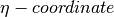
(a hybrid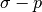
coordinate) used by other dynamical cores within CAM.In the current implementation for use in CAM, the FV dynamics and physics are “time split” in the sense that all prognostic variables are updated sequentially by the “dynamics” and then the “physics”. The time integration within the FV dynamics is fully explicit, with sub-cycling within the 2D Lagrangian dynamics to stabilize the fastest wave (see section [FVvdisc]). The transport for tracers, however, can take a much larger time step (e.g., 30 minutes as for the physics).
5.1.2. The governing equations for the hydrostatic atmosphere¶
For reference purposes, we present the continuous differential equations
for the hydrostatic 3D atmospheric flow on the sphere for a general
vertical coordinate  (e.g., [Kas74]). Using
standard notations, the hydrostatic balance equation is given as
follows:
(e.g., [Kas74]). Using
standard notations, the hydrostatic balance equation is given as
follows:
(1)
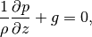
where  is the density of the air, p the pressure, and
g the gravitational constant. Introducing the “pseudo-density”
is the density of the air, p the pressure, and
g the gravitational constant. Introducing the “pseudo-density”
 (i.e., the vertical pressure gradient in the general coordinate),
from the hydrostatic balance equation the pseudo-density and the true
density are related as follows:
(i.e., the vertical pressure gradient in the general coordinate),
from the hydrostatic balance equation the pseudo-density and the true
density are related as follows:
(2)
where  is the geopotential. Note that
is the geopotential. Note that  reduces to the “true density” if
reduces to the “true density” if  , and the “surface
pressure”
, and the “surface
pressure”
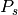
if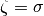
(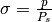
). The conservation of total air mass using as the prognostic variable can be written as
(3)
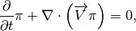
where
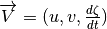
. Similarly, the mass conservation law for tracer species (or water vapor) can be written as(4)
where q is the mass mixing ratio (or specific humidity) of the tracers (or water vapor).
Choosing the (virtual) potential temperature as the thermodynamic variable, the first law of thermodynamics is written as
(5)
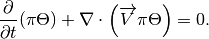
Letting
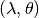
denote the (longitude, latitude) coordinate, the momentum equations can be written in the “vector-invariant form” as follows:(6)
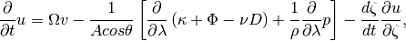
(7)
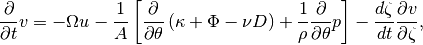
where A is the radius of the earth,
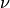
is the coefficient for the optional divergence damping, D is the horizontal divergence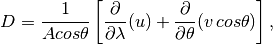
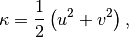
and , the vertical component of the absolute vorticity, is defined as follows:
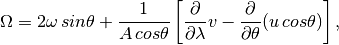
where
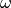
is the angular velocity of the earth. Note that the last term in (6) and (7) vanishes if the vertical coordinate is a conservative quantity (e.g., entropy
under adiabatic conditions [HA90] or an imaginary
conservative tracer), and the 3D divergence operator becomes 2D along
constant surfaces. The discretization of the 2D
horizontal transport process is described in section [FVhdisc]. The
complete dynamical system using the Lagrangian control-volume vertical
discretization is described in section [FVvdisc] and section [sec:damp]
describes the explicit diffusion operators available in CAM5. A mass,
momentum, and total energy conservative mapping algorithm is described
in section [FVmap] and in section [sec:geo] an alternative geopotential
conserving vertical remapping method is described. Sections
[FVqconserve] and [sec:neg] are on the adjusctment of pressure to
include the change in mass of water vapor and on the negative tracer
fixer in CAM, respectively. Last the global energy fixer is described
(section [sec:Global-Energy-Fixer]).
5.1.3. Horizontal discretization of the transport process on the sphere¶
Since the vertical transport term would vanish after the introduction of the vertical Lagrangian control-volume discretization (see section [FVvdisc]), we shall present here only the 2D (horizontal) forms of the FFSL transport algorithm for the transport of density (3) and mixing ratio-like quantities (4) on the sphere. The governing equation for the pseudo-density (3) becomes
(8)![\frac{\partial }{\partial t}\pi +\frac{1}{Acos\theta }\left[
\frac{\partial }{\partial \lambda }(u\pi )+\frac{\partial }{\partial
\theta }(v\pi \, cos\theta )\right] =0 .](../_images/math/52ff56025129ac48b4e8a0ea31ddd0df0fd1036b.png)
The finite-volume (integral) representation of the continuous
field is defined as follows:
Given the exact 2D wind field
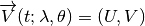
the 2D integral representation of the conservation law for can be obtained by integrating (8) in time and in space
can be obtained by integrating (8) in time and in space
The above 2D transport equation is still exact for the finite-volume under consideration. To carry out the contour integral, certain approximations must be made. LR96 essentially decomposed the flux integral using two orthogonal 1D flux-form transport operators. Introducing the following difference operator
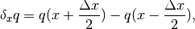
and assuming
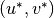
is the time-averaged (from time to time
to time  )
) 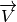
on the C-grid (e.g., Fig. 1 in LR96), the 1-D finite-volume flux-form transport operator F in the -direction is
-direction is
(9)![F(u^{*},\Delta t,\widetilde{\pi })=-\frac{1}{A\Delta \lambda cos\theta
}\, \delta _{\lambda }\left[ \int _{t}^{t+\Delta t}\pi U\, dt\right]
=-\frac{\Delta t}{A\Delta \lambda cos\theta }\, \delta _{\lambda
}\left[ \chi (u^{*},\Delta t;\pi )\right] ,](../_images/math/04b58a3af19673adb317dc3d2572a8171a4f1101.png)
where  , the time-accumulated (from t to t+
, the time-accumulated (from t to t+ t) mass flux across the cell wall, is
defined as follows,
t) mass flux across the cell wall, is
defined as follows,
(10)
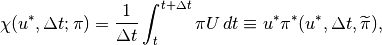
and
(11)
can be interpreted as a time mean (from time to time :math:`
t+Delta t`) pseudo-density value of all material that passed through
the cell edge from the upwind direction.
Note that the above time integration is to be carried out along the backward-in-time trajectory of the cell edge position from
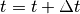
(the arrival point; (e.g., point B in Fig. 3 of LR96) back to time (the departure point; e.g., point B’ in
Fig. 3 of LR96). The very essence of the 1D finite-volume algorithm is
to construct, based on the given initial cell-mean values of :math:`
widetilde{pi }`, an approximated subgrid distribution of the true
field, to enable an analytic integration of (11).
Assuming there is no error in obtaining the time-mean wind
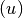
, the only error produced by the 1D transport scheme would be solely due to the approximation to the continuous distribution of within the subgrid under consideration (this is not the
case in 2D; Lauritzen, Ullrich, and Nair (2010)). From this perspective,
it can be said that the 1D finite-volume transport algorithm combines
the time-space discretization in the approximation of the time-mean
cell-edge values 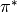
. The physically correct way of approximating the integral (11) must be “upwind”, in the sense that it is integrated along the backward trajectory of the cell edges. For example, a center difference approximation to (11) would be physically incorrect, and consequently numerically unstable unless artificial numerical diffusion is added.Central to the accuracy and computational efficiency of the finite-volume algorithms is the degrees of freedom that describe the subgrid distribution. The first order upwind scheme, for example, has zero degrees of freedom within the volume as it is assumed that the subgrid distribution is piecewise constant having the same value as the given volume-mean. The second order finite-volume scheme (e.g., [LCSW94]) assumes a piece-wise linear subgrid distribution, which allows one degree of freedom for the specification of the “slope” of the linear distribution to improve the accuracy of integrating (11). The Piecewise Parabolic Method (PPM, [CW84]) has two degrees of freedom in the construction of the second order polynomial within the volume, and as a result, the accuracy is significantly enhanced. The PPM appears to strike a good balance between computational efficiency and accuracy. Therefore, the PPM is the basic 1D scheme we chose (see, e.g., [Mac98]). Note that the subgrid PPM distributions are compact, and do not extend beyond the volume under consideration. The accuracy is therefore significantly better than the order of the chosen polynomials implies. While the PPM scheme possesses all the desirable attributes (mass conserving, monotonicity preserving, and high-order accuracy) in 1D, it is important that a solution be found to avoid the directional splitting in the multi-dimensional problem of modeling the dynamics and transport processes of the Earth’s atmosphere.
The first step for reducing the splitting error is to apply the two
orthogonal 1D flux-form operators in a directionally symmetric way.
After symmetry is achieved, the “inner operators” are then replaced with
corresponding advective-form operators (in CAM5 the “inner operators”
are based on constant cell-average values and not the PPM). A stability
analysis of the consequences of using different inner and outer
operators in the LR96 scheme is given in Lauritzen (2007). A consistent
advective-form operator in the  direction can be
derived from its flux-form counterpart (
direction can be
derived from its flux-form counterpart (
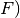
as follows:(12)
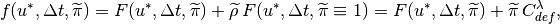
(13)
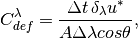
where
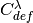
is a dimensionless number indicating the degree of the flow deformation in the-direction.
The above derivation of  is slightly different from LR96’s
approach, which adopted the traditional 1D advective-form
semi-Lagrangian scheme. The advantage of using (12) is that
computation of winds at cell centers (Eq. 2.25 in LR96) are avoided.
is slightly different from LR96’s
approach, which adopted the traditional 1D advective-form
semi-Lagrangian scheme. The advantage of using (12) is that
computation of winds at cell centers (Eq. 2.25 in LR96) are avoided.
Analogously, the 1D flux-form transport operator G in the latitudinal (:math:`theta`) direction is derived as follows:
(14)
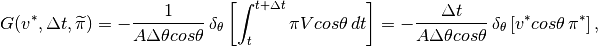
and likewise the advective-form operator,
(15)
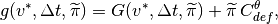
where
(16)
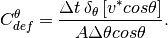
To complete the construction of the 2D algorithm on the sphere, we introduce the following short hand notations:
(17)
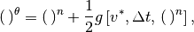
(18)![(\, )^{\lambda }=(\, )^{n}+\frac{1}{2}f\left[ u^{*},\Delta t,\, (\,
)^{n}\right] .](../_images/math/1af7ada53d03340eb9d88cdd27728bb7bb1245ce.png)
The 2D transport algorithm (cf, Eq. 2.24 in LR96) can then be written as
(19)
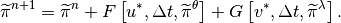
Using explicitly the mass fluxes  ,
(19) is rewritten as
,
(19) is rewritten as
(20)
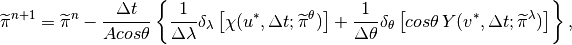
where
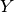
, the mass flux in the meridional direction, is defined in a similar fashion as (10). The ability of
the LR96 scheme to approximate the exact geometry of the fluxes for
deformational flows is discussed in Machenhauer, Kaas, and Lauritzen
(2009) and Lauritzen, Ullrich, and Nair (2010).
It can be verified that in the special case of constant density flow (
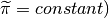
the above equation degenerates to the finite-difference representation of the incompressibility condition of the “time mean” wind field , i.e.,(21)
The fulfillment of the above incompressibility condition for constant
density flows is crucial to the accuracy of the 2D flux-form
formulation. For transport of volume mean mixing ratio-like quantities
 the mass fluxes
the mass fluxes
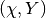
as defined previously should be used as follows(22)![\widetilde{q}^{n+1}=\frac{1}{\widetilde{\pi }^{n+1}}\left[
\widetilde{\pi }^{n}\widetilde{q}^{n}+F(\chi ,\Delta
t,\widetilde{q}^{\theta })+G(Y,\Delta t,\widetilde{q}^{\lambda
})\right] .](../_images/math/d1eaf93e9a67b31d169cb5597ba42848ed5ab014.png)
Note that the above form of the tracer transport equation consistently
degenerates to (19) if  (i.e.,
the tracer density equals to the background air density), which is
another important condition for a flux-form transport algorithm to be
able to avoid generation of noise (e.g., creation of artificial
gradients) and to maintain mass conservation.
(i.e.,
the tracer density equals to the background air density), which is
another important condition for a flux-form transport algorithm to be
able to avoid generation of noise (e.g., creation of artificial
gradients) and to maintain mass conservation.
5.1.4. A vertically Lagrangian and horizontally Eulerian control-volume discretization of the hydrodynamics¶
The very idea of using Lagrangian vertical coordinate for formulating governing equations for the atmosphere is not entirely new. [Sta45]) is likely the first to have formulated, in the continuous differential form, the governing equations using a Lagrangian coordinate. Starr did not make use of the discrete Lagrangian control-volume concept for discretization nor did he present a solution to the problem of computing the pressure gradient forces. In the finite-volume discretization to be described here, the Lagrangian surfaces are treated as the bounding material surfaces of the Lagrangian control-volumes within which the finite-volume algorithms developed in LR96, LR97, and L97 will be directly applied.
To use a vertical Lagrangian coordinate system to reduce the 3D governing equations to the 2D forms, one must first address the issue of whether it is an inertial coordinate or not. For hydrostatic flows, it is. This is because both the right-hand-side and the left-hand-side of the vertical momentum equation vanish for purely hydrostatic flows.
Realizing that the earth’s surface, for all practical modeling purposes, can be regarded as a non-penetrable material surface, it becomes straightforward to construct a terrain-following Lagrangian control-volume coordinate system. In fact, any commonly used terrain-following coordinates can be used as the starting reference (i.e., fixed, Eulerian coordinate) of the floating Lagrangian coordinate system. To close the coordinate system, the model top (at a prescribed constant pressure) is also assumed to be a Lagrangian surface, which is the same assumption being used by practically all global hydrostatic models.
The basic idea is to start the time marching from the chosen
terrain-following Eulerian coordinate (e.g., pure  or
hybrid -p), treating the initial coordinate surfaces as
material surfaces, the finite-volumes bounded by two coordinate
surfaces, i.e., the Lagrangian control-volumes, are free vertically,
to float, compress, or expand with the flow as dictated by the
hydrostatic dynamics.
or
hybrid -p), treating the initial coordinate surfaces as
material surfaces, the finite-volumes bounded by two coordinate
surfaces, i.e., the Lagrangian control-volumes, are free vertically,
to float, compress, or expand with the flow as dictated by the
hydrostatic dynamics.
By choosing an imaginary conservative tracer that is a
monotonic function of height and constant on the initial reference
coordinate surfaces (e.g., the value of “ ” in the hybrid
coordinate used in CAM), the 3D governing equations
written for the general vertical coordinate in section 1.2 can be
reduced to 2D forms. After factoring out the constant
” in the hybrid
coordinate used in CAM), the 3D governing equations
written for the general vertical coordinate in section 1.2 can be
reduced to 2D forms. After factoring out the constant  , (3), the conservation law for the pseudo-density
(
, (3), the conservation law for the pseudo-density
( ), becomes
), becomes
(23)
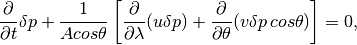
where the symbol  represents the vertical difference
between the two neighboring Lagrangian surfaces that bound the finite
control-volume. From (1), the pressure thickness
represents the vertical difference
between the two neighboring Lagrangian surfaces that bound the finite
control-volume. From (1), the pressure thickness
 of that control-volume is proportional to the total
mass, i.e.,
of that control-volume is proportional to the total
mass, i.e.,
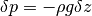
. Therefore, it can be said that the Lagrangian control-volume vertical discretization has the hydrostatic balance built-in, and can be regarded as the
“pseudo-density” for the discretized Lagrangian vertical coordinate
system.
Similarly, (4), the mass conservation law for all tracer species, is
(24)![\frac{\partial }{\partial t}(q\delta p)+\frac{1}{Acos\theta }\left[
\frac{\partial }{\partial \lambda }(uq\delta p)+\frac{\partial
}{\partial \theta }(vq\delta p\, cos\theta )\right] =0,](../_images/math/e385252f7da4941f42f4ba1bd6b0c8984e8d4235.png)
the thermodynamic equation, (5), becomes
(25)![\frac{\partial }{\partial t}(\Theta \delta p)+\frac{1}{Acos\theta
}\left[ \frac{\partial }{\partial \lambda }(u\Theta \delta
p)+\frac{\partial }{\partial \theta }(v\Theta \delta p\, cos\theta
)\right] =0,](../_images/math/9d5fba11e9ecc312daad63a0af213815c04bfb6e.png)
and (6) and (7), the momentum equations, are reduced to
(26)
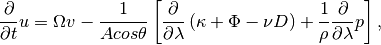
(27)
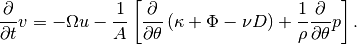
Given the prescribed pressure at the model top
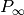
, the position of each Lagrangian surface (horizontal
subscripts omitted) is determined in terms of the hydrostatic pressure
as follows:
(horizontal
subscripts omitted) is determined in terms of the hydrostatic pressure
as follows:
(28)
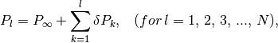
where the subscript is the vertical index ranging from 1
at the lower bounding Lagrangian surface of the first (the highest)
layer to  at the Earth’s surface. There are +1
Lagrangian surfaces to define a total number of Lagrangian
layers. The surface pressure, which is the pressure at the lowest
Lagrangian surface, is easily computed as
at the Earth’s surface. There are +1
Lagrangian surfaces to define a total number of Lagrangian
layers. The surface pressure, which is the pressure at the lowest
Lagrangian surface, is easily computed as
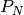
using (28). The surface pressure is needed for the physical parameterizations and to define the reference Eulerian coordinate for the mapping procedure (to be described in section A mass, momentum, and total energy conserving mapping algorithm).With the exception of the pressure-gradient terms and the addition of a
thermodynamic equation, the above 2D Lagrangian dynamical system is the
same as the shallow water system described in LR97. The conservation law
for the depth of fluid  in the shallow water system of LR97
is replaced by (23) for the pressure thickness .
The ideal gas law, the mass conservation law for air mass,
the conservation law for the potential temperature (25),
together with the modified momentum equations (26) and (27)
close the 2D Lagrangian dynamical system, which are vertically coupled
only by the hydrostatic relation (see (51)), section [FVmap].
in the shallow water system of LR97
is replaced by (23) for the pressure thickness .
The ideal gas law, the mass conservation law for air mass,
the conservation law for the potential temperature (25),
together with the modified momentum equations (26) and (27)
close the 2D Lagrangian dynamical system, which are vertically coupled
only by the hydrostatic relation (see (51)), section [FVmap].
The time marching procedure for the 2D Lagrangian dynamics follows closely that of the shallow water dynamics fully described in LR97. For computational efficiency, we shall take advantage of the stability of the FFSL transport algorithm by using a much larger time step (
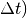
for the transport of all tracer species (including water vapor). As in the shallow water system, the Lagrangian dynamics uses a relatively small time step,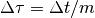
, where is the number of the sub-cycling needed
to stabilize the fastest wave in the system. We shall describe here this
time-split procedure for the prognostic variables
is the number of the sub-cycling needed
to stabilize the fastest wave in the system. We shall describe here this
time-split procedure for the prognostic variables
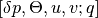
on the D-grid. Discretization on the C-grid for obtaining the diagnostic variables, the time-averaged winds , is analogous to that of the D-grid (see also LR97).Introducing the following short hand notations (cf, (17) and (18)):
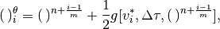
![(\, )_{i}^{\lambda }=(\,
)^{n+\frac{i-1}{m}}+\frac{1}{2}f[u_{i}^{*},\Delta \tau ,(\,
)^{n+\frac{i-1}{m}}],](../_images/math/0590088c4b3228fe185956bb012bd06454070db9.png)
and applying directly (20), the update of “pressure thickness”
, using the fractional time step
 , can be written as
, can be written as
(29)
where are the background air mass fluxes, which are then used as input to Eq. 24 for transport of the potential temperature :
(30)![\Theta ^{n+\frac{i}{m}}=\frac{1}{\delta p^{n+\frac{i}{m}}}\left[
\delta p^{n+\frac{i-1}{m}}\Theta ^{n+\frac{i-1}{m}}+F(x_{i}^{*},\Delta
\tau ;\Theta _{i}^{\theta })+G(y_{i}^{*},\Delta \tau ,\Theta
_{i}^{\lambda })\right] .](../_images/math/b9a5582455bbf0b32e93699e881698932df63c11.png)
The discretized momentum equations for the shallow water system (cf, Eq. 16 and Eq. 17 in LR97) are modified for the pressure gradient terms as follows:
(31)
(32)![v^{n+\frac{i}{m}}=v^{n+\frac{i-1}{m}}-\Delta \tau \, \left[
x_{i}^{*}\left( u_{i}^{*},\Delta \tau ;\Omega ^{\theta }\right)
+\frac{1}{A\Delta \theta }\delta _{\theta }(\kappa ^{*}-\nu
D^{*})-\widehat{P_{\theta }}\right] ,](../_images/math/8d854f0610a182ae603038d45c64deb3bcfb737b.png)
where is the upwind-biased “kinetic energy” (as
defined by Eq. 18 in LR97), and  , the horizontal
divergence on the D-grid, is discretized as follows:
, the horizontal
divergence on the D-grid, is discretized as follows:
The finite-volume mean pressure-gradient terms in (31) and (32) are computed as follows:
(33)
(34)
where , and the symbols “” and
“
 ” indicate that the contour integrations are
to be carried out, using the finite-volume algorithm described in L97, in the and space, respectively.
” indicate that the contour integrations are
to be carried out, using the finite-volume algorithm described in L97, in the and space, respectively.
To complete one time step, equations (29)-[v], together with their
counterparts on the C-grid are cycled times using the
fractional time step , which are followed by the
tracer transport using (24) with the large-time-step
 .
.
Mass fluxes  and the winds
on the C-grid are accumulated for the
large-time-step transport of tracer species (including water vapor)
and the winds
on the C-grid are accumulated for the
large-time-step transport of tracer species (including water vapor)
 as
as
(35)
where the time-accumulated mass fluxes  are
computed as
are
computed as
(36)
(37)
The time-averaged winds , defined as follows, are
to be used as input for the computations of  and
:math:`
q^{theta }:`
and
:math:`
q^{theta }:`
(38)
(39)
The use of the time accumulated mass fluxes and the time-averaged winds for the large-time-step tracer transport in the manner described above ensures the conservation of the tracer mass and maintains the highest degree of consistency possible given the time split integration procedure. A graphical illustration of the different levels of sub-cycling in CAM5 is given on Figure [fig:subc].

Figure 3.1: A graphical illustration of the different levels of sub-cycling in CAM5.
The algorithm described here can be readily applied to a regional model
if appropriate boundary conditions are supplied. There is formally no
Courant number related time step restriction associated with the
transport processes. There is, however, a stability condition imposed by
the gravity-wave processes. For application on the whole sphere, it is
computationally advantageous to apply a polar filter to allow a dramatic
increase of the size of the small time step  . The effect of the polar filter is to stabilize the
short-in-wavelength (and high-in-frequency) gravity waves that are being
unnecessarily and unidirectionally resolved at very high latitudes in
the zonal direction. To minimize the impact to meteorologically
significant larger scale waves, the polar filter is highly scale
selective and is applied only to the diagnostic variables on the
auxiliary C-grid and the tendency terms in the D-grid momentum
equations. No polar filter is applied directly to any of the prognostic
variables.
. The effect of the polar filter is to stabilize the
short-in-wavelength (and high-in-frequency) gravity waves that are being
unnecessarily and unidirectionally resolved at very high latitudes in
the zonal direction. To minimize the impact to meteorologically
significant larger scale waves, the polar filter is highly scale
selective and is applied only to the diagnostic variables on the
auxiliary C-grid and the tendency terms in the D-grid momentum
equations. No polar filter is applied directly to any of the prognostic
variables.
The design of the polar filter follows closely that of [ST95] for the C-grid Arakawa type dynamical core (e.g., [AL81]). For the CAM6.0 the fast-fourier transform component of the polar filtering has replaced the algebraic form at all filtering latitudes. Because our prognostic variables are computed on the D-grid and the fact that the FFSL transport scheme is stable for Courant number greater than one, in realistic test cases the maximum size of the time step is about two to three times larger than a model based on Arakawa and Lamb’s C-grid differencing scheme. It is possible to avoid the use of the polar filter if, for example, the “Cubed grid” is chosen, instead of the current latitude-longitude grid. rewrite of the rest of the model codes including physics parameterizations, the land model, and most of the post processing packages.
The size of the small time step for the Lagrangian dynamics is only a function of the horizontal resolution. Applying the polar filter, for the 2-degree horizontal resolution, a small-time-step size of 450 seconds can be used for the Lagrangian dynamics. From the large-time-step transport perspective, the small-time-step integration of the 2D Lagrangian dynamics can be regarded as a very accurate iterative solver, with m iterations, for computing the time mean winds and the mass fluxes, analogous in functionality to a semi-implicit algorithm’s elliptic solver (e.g., [RHR00]). Besides accuracy, the merit of an “explicit” versus “semi-implicit” algorithm ultimately depends on the computational efficiency of each approach. In light of the advantage of the explicit algorithm in parallelization, we do not regard the explicit algorithm for the Lagrangian dynamics as an impedance to computational efficiency, particularly on modern parallel computing platforms.
5.1.5. Optional diffusion operators in CAM5¶
The ‘CD’-grid discretization method used in the CAM finite-volume dynamical core provides explicit control over the rotational modes at the grid scale, due to monotonicity constraint in the PPM-based advection, but there is no explicit control over the divergent modes at the grid scale Skamarock (see, e.g., 2010). Therefore divergence damping terms appear on the right-hand side of the momentum equations (26) and (27):
(40)![-\frac{1}{Acos\theta }\left[
\frac{\partial }{\partial \lambda }\left( -\nu D\right) \right]](../_images/math/2b5b7c31ef651049e6e2f61bbd615488d4610750.png)
and
(41)
respectively, where the strength of the divergence damping is controlled by the coefficient given by
(42)
where  throughout the atmosphere except in the top
model levels where it monotonically increases to approximately
at the top of the atmosphere. The divergence damping
described above is referred to as ‘second-order’ divergence damping as
it effectively damps divergence with a operator.
throughout the atmosphere except in the top
model levels where it monotonically increases to approximately
at the top of the atmosphere. The divergence damping
described above is referred to as ‘second-order’ divergence damping as
it effectively damps divergence with a operator.
In CAM5 optional ‘fourth-order’ divergence damping has been implemented
where the divergence is effectively damped with a
 -operator which is usually more scale selective than
‘second-order’ damping operators. For ‘fourth-order’ divergence damping
the terms
-operator which is usually more scale selective than
‘second-order’ damping operators. For ‘fourth-order’ divergence damping
the terms
(43)
and
(44)
are added to the right-hand side of ([u-lcv]) and ([v-lcv]), respectively. The horizontal Laplacian -operator in spherical coordinates for a scalar is given by
The fourth-order divergence damping coefficient is given by
(45)
Since divergence damping is added explicitly to the equations of motion it is unstable if the time-step is too large or the damping coefficients ( or ) are too large. To stabilize the fourth-order divergence damping the winds used to compute the divergence are filtered using the same FFT filtering which is applied to stabilize the gravity waves.
To control potentially excessive polar night jets in high-resolution configurations of CAM, Laplacian damping of the wind components has been added as an option in CAM5. That is, the terms
(46)
and
(47)
are added to the right-hand side of the momentum equations ([u-lcv])
and ([v-lcv]), respectively. The damping coefficient  is zero throughout the atmosphere except in the top layers where it
increases monotonically and smoothly from zero to approximately four
times a user-specified damping coefficient at the top of the atmosphere
(the user-specified damping coefficient is typically on the order of
is zero throughout the atmosphere except in the top layers where it
increases monotonically and smoothly from zero to approximately four
times a user-specified damping coefficient at the top of the atmosphere
(the user-specified damping coefficient is typically on the order of
 m
m sec
sec ).
).
5.1.6. A mass, momentum, and total energy conserving mapping algorithm¶
The Lagrangian surfaces that bound the finite-volume will eventually deform, particularly in the presence of persistent diabatic heating/cooling, in a time scale of a few hours to a day depending on the strength of the heating and cooling, to a degree that it will negatively impact the accuracy of the horizontal-to-Lagrangian-coordinate transport and the computation of the pressure gradient forces. Therefore, a key to the success of the Lagrangian control-volume discretization is an accurate and conservative algorithm for mapping the deformed Lagrangian coordinate back to a fixed reference Eulerian coordinate.
There are some degrees of freedom in the design of the vertical mapping
algorithm. To ensure conservation, our current (and recommended) mapping
algorithm is based on the reconstruction of the “mass” (pressure
thickness ), zonal and meridional “winds”, “tracer
mixing ratios”, and “total energy” (volume integrated sum of the
internal, potential, and kinetic energy), using the monotonic Piecewise
Parabolic sub-grid distributions with the hydrostatic pressure (as
defined by ([L-coord])) as the mapping coordinate. We outline the
mapping procedure as follows.
Step 1: Define a suitable Eulerian reference coordinate as a target coordinate. The mass in each layer (
Step 2: Construct the piece-wise continuous vertical subgrid profiles of tracer mixing ratios (
) in the Lagrangian control-volume coordinate, or the source coordinate. The total energy
, internal energy
, and the kinetic energy () as follows:
(48)
Applying integration by parts and the ideal gas law, the above integral can be rewritten as
(49)
where is the layer mean virtual temperature, is the layer mean kinetic energy,
is the pressure at layer edges, and and
are the specific heat of the air at constant volume and at constant pressure, respectively. The total energy in each grid cell is calculated as
The method employed to create subgrid profiles is set by the flag
. For
Step 3: Layer mean values of
and . For winds on D-grid,
, the original quasi-monotonic constraint is used. If , a full monotonic constraint is used. If is less than 7, the variable,
, is determined by the following:
If
, a standard PPM constraint is used. If
, an improved full monotonicity constraint is used. If
, a positive definite constraint is used. If , the algorithm will do nothing.
Step 4: Retrieve virtual temperature in the Eulerian (target) coordinate. Start by computing kinetic energy in the Eulerian coordinate system for each layer. Then substitute kinetic energy and the hydrostatic relationship into ([TE:sub:fv]). The layer mean temperature
for layer
in the Eulerian coordinate is then retrieved from the reconstructed total energy (done in Step 3) by a fully explicit integration procedure starting from the surface up to the model top as follows:
(50)
where
and
is the gas constant for dry air.
![\begin{aligned}
\Gamma & = & \frac{1}{\delta
p}\left\{\int\left[C_{p}T_{v}+\frac{1}{2}\left(u^{2}+v^{2}\right)\right]
dp + \int d\left(p\phi\right)\right\} \nonumber \\
& = & C_{p}\overline{T_{v}}+\frac{1}{\delta p}\delta \left( p\phi
\right) +K ,\end{aligned}](../_images/math/d203a8fab00773489882481b611d86cb3a4535b4.png)


To convert the potential virtual temperature to the
layer mean temperature the conversion factor is obtained by equating the
following two equivalent forms of the hydrostatic relation for and 
(51)
(52)
where . The conversion formula between layer mean temperature and layer mean potential temperature is obtained as follows:
(53)
The physical implication of retrieving the layer mean temperature from the total energy as described in Step 3 is that the dissipated kinetic energy, if any, is locally converted into internal energy via the vertically sub-grid mixing (dissipation) processes. Due to the monotonicity preserving nature of the sub-grid reconstruction the column-integrated kinetic energy inevitably decreases (dissipates), which leads to local frictional heating. The frictional heating is a physical process that maintains the conservation of the total energy in a closed system.
As viewed by an observer riding on the Lagrangian surfaces, the mapping procedure essentially performs the physical function of the relative-to-the-Eulerian-coordinate vertical transport, by vertically redistributing (air and tracer) mass, momentum, and total energy from the Lagrangian control-volume back to the Eulerian framework.
As described in section [FVvdisc], the model time integration cycle
consists of small time steps for the 2D Lagrangian dynamics
and one large time step for tracer transport. The mapping time step can
be much larger than that used for the large-time-step tracer transport.
In tests using the Held-Suarez forcing ([HS94]), a
three-hour mapping time interval is found to be adequate. In the full
model integration, one may choose the same time step used for the
physical parameterizations so as to ensure the input state variables to
physical parameterizations are in the usual “Eulerian” vertical
coordinate. In CAM5, vertical remapping takes place at each physics time
step.
5.1.7. A geopotential conserving mapping algorithm¶
An alternative vertical mapping approach is available in CAM5. Instead of retrieving temperature by remapped total energy in the Eulerian coordinate, the alternative approach maps temperature directly from the Lagrangian coordinate to the Eulerian coordinate. Since geopotential is defined as
mapping over or over
preserves the geopotential at the model lid. This approach
prevents the mapping procedure from generating spurious pressure
gradient forces at the model lid. Unlike the energy-conserving algorithm
which could produce substantial temperature fluctuations at the model
lid, the geopotential conserving approach guarantees a smooth
(potential) temperature profile. However, the geopotential conserving
does not conserve total energy in the remapping procedure. This may be
resolved by a global energy fixer already implemented in the model (see
section [sec:Global-Energy-Fixer]).
5.1.8. Adjustment of pressure to include change in mass of water vapor¶
The physics parameterizations operate on a model state provided by the dynamics, and are allowed to update specific humidity. However, the surface pressure remains fixed throughout the physics updates, and since there is an explicit relationship between the surface pressure and the air mass within each layer, the total air mass must remain fixed as well throughout the physics updates. If no further correction were made, this would imply that the dry air mass changed if the water vapor mass changed in the physics updates. Therefore the pressure field is changed to include the change in water vapor mass due to the physics updates. We impose the restrictions that dry air mass and water mass are conserved as follows:
The total pressure is
with dry pressure  , water vapor pressure
, water vapor pressure  . The
specific humidity is
. The
specific humidity is
We define a layer thickness as , so
We are concerned about 3 time levels:  is input to physics,
is output from physics,
is input to physics,
is output from physics,  is the adjusted
value for dynamics.
is the adjusted
value for dynamics.
Dry mass is the same at and but not at . To conserve dry mass, we require that

or
(54)
Water mass is the same at and , but not at . To conserve water mass, we require that
(55)
Substituting ([eq:wetdif]) into ([eq:drydif]),
which yields a modified specific humidity for the dynamics:
We note that this correction as implemented makes a small change to the water vapor as well. The pressure correction could be formulated to leave the water vapor unchanged.
5.1.9. Negative Tracer Fixer¶
In the Finite Volume dynamical core, neither the monotonic transport nor the conservative vertical remapping guarantee that tracers will remain positive definite. Thus the Finite Volume dynamical core includes a negative tracer fixer applied before the parameterizations are calculated. For negative mixing ratios produced by horizontal transport, the model will attempt to borrow mass from the east and west neighboring cells. In practice, most negative values are introduced by the vertical remapping which does not guarantee positive definiteness in the first and last layer of the vertical column.
A minimum value is defined for each tracer. If the tracer falls below that minimum value, it is set to that minimum value. If there is enough mass of the tracer in the layer immediately above, tracer mass is removed from that layer to conserve the total mass in the column. If there is not enough mass in the layer immediately above, no compensation is applied, violating conservation. Usually such computational sources are very small.
The amount of tracer needed from the layer above to bring  up
to is
up
to is
where is the vertical index, increasing downward. After the
filling
Currently for water vapor, for CLDLIQ, CLDICE, NUMLIQ and NUMICE, and for the remaining constituents.
5.1.10. Global Energy Fixer¶
The finite-volume dynamical core as implemented in CAM and described here conserves the dry air and all other tracer mass exactly without a “mass fixer”. The vertical Lagrangian discretization and the associated remapping conserves the total energy exactly. The only remaining issue regarding conservation of the total energy is the horizontal discretization and the use of the “diffusive” transport scheme with monotonicity constraint. To compensate for the loss of total energy due to horizontal discretization, we apply a global fixer to add the loss in kinetic energy due to “diffusion” back to the thermodynamic equation so that the total energy is conserved. The loss in total energy (in flux unit) is found to be around 2 ) with the 2 degrees resolution.
The energy fixer is applied following the negative tracer fixer. The fixer is applied on the unstaggered physics grid rather than on the staggered dynamics grid. The energies on these two grids are difficult to relate because of the nonlinear terms in the energy definition and the interpolation of the state variables between the grids. The energy is calculated in the parameterization suite before the state is passed to the finite volume core as described in the beginning of Chapter [chap:model:sub:physics]. The fixer is applied just before the parameterizations are calculated. The fixer is a simplification of the fixer in the Eulerian dynamical core described in section [energyfixer].
Let minus sign superscript denote the values at the beginning of the dynamics time step, i.e. after the parameterizations are applied, let a plus sign superscript denote the values after fixer is applied, and let a hat denote the provisional value before adjustment. The total energy over the entire computational domain after the fixer is
where  is the latent heat of vaporation,
is the latent heat of vaporation,  is the
latent heat of fusion,
is the
latent heat of fusion,  is water vapor mixing ratio, and
is cloud water mixing ratio. should equal the
energy at the beginning of the dynamics time step
is water vapor mixing ratio, and
is cloud water mixing ratio. should equal the
energy at the beginning of the dynamics time step
Let  denote the energy of the provisional state
provided by the dynamical core before the adjustment.
denote the energy of the provisional state
provided by the dynamical core before the adjustment.
Thus, the total energy added into the system by the dynamical core is
 . The energy fixer then changes dry static energy
() by a constant amount over each grid cell to
conserve total energy in the entire computational domain. The dry static
energy added to each grid cell may be expressed as
. The energy fixer then changes dry static energy
() by a constant amount over each grid cell to
conserve total energy in the entire computational domain. The dry static
energy added to each grid cell may be expressed as
Therefore,
or
(56)
This will ensure .
By hydrostatic approximation, the geopotential equation is

and for any arbitrary point between  and
the geopotential may be written as
and
the geopotential may be written as
The geopotential at the mid point of a model layer between
and , or the layer
mean, is
![\begin{aligned}
\Phi_k & = &
\frac{\int_{p_k-\frac{1}{2}}^{p_k+\frac{1}{2}}\Phi\,dp}{\int_{p_k-\frac{1}{2}}^{p_k+\frac{1}{2}}\,dp}
\nonumber \\
& = & \frac{\int_{p_k-\frac{1}{2}}^{p_k+\frac{1}{2}} \left[\Phi_{k+\frac{1}{2}}+R_d T_v \left(lnp_{k+\frac{1}{2}}-lnp\right)
\right]
\,dp}{\int_{p_k-\frac{1}{2}}^{p_k+\frac{1}{2}}\,dp} \nonumber \\
& = & \Phi_{k+\frac{1}{2}}+R_d T_v lnp_{k+\frac{1}{2}} -
\frac{\int_{p_k-\frac{1}{2}}^{p_k+\frac{1}{2}}lnp
\,dp}{p_{k+\frac{1}{2}}-p_{k-\frac{1}{2}}} \nonumber \\
& = & \Phi_{k+\frac{1}{2}}+R_d T_v
\left(1-p_{k-\frac{1}{2}}\frac{lnp_{k+\frac{1}{2}}-lnp_{k-\frac{1}{2}}}{p_{k+\frac{1}{2}}
-p_{k-\frac{1}{2}}}\right)\end{aligned}](../_images/math/193a2b747839a4afe7ad12c3a218b5f66f6306f7.png)
For layer , the energy fixer will solve the following equation
based on ([dry:sub:staticeqn]),

Since the energy fixer will not alter the water vapor mixing ratio and the pressure field,

Therefore,
The energy fixer starts from the Earth’s surface and works its way up to the model top in adjusting the temperature field. At the surface layer, . After the temperature is adjusted in a grid cell, the geopotential at the upper interface of the cell is updated which is needed for the temperature adjustment in the grid cell above.
5.1.11. Further discussion¶
There are still aspects of the numerical formulation in the finite volume dynamical core that can be further improved. For example, the choice of the horizontal grid, the computational efficiency of the split-explicit time marching scheme, the choice of the various monotonicity constraints, and how the conservation of total energy is achieved.
The impact of the non-linear diffusion associated with the monotonicity constraint is difficult to assess. All discrete schemes must address the problem of subgrid-scale mixing. The finite-volume algorithm contains a non-linear diffusion that mixes strongly when monotonicity principles are locally violated. However, the effect of nonlinear diffusion due to the imposed monotonicity constraint diminishes quickly as the resolution matches better to the spatial structure of the flow. In other numerical schemes, however, an explicit (and tunable) linear diffusion is often added to the equations to provide the subgrid-scale mixing as well as to smooth and/or stabilize the time marching.
5.1.12. Specified Dynamics Option¶
In CAM4 the capability included to perform simulations using specified dynamics, where offline meteorological fields are nudged to the online calculated meteorology. This procedure was originally used in the Model of Atmospheric Transport and Chemistry (MATCH) (Rasch et al., 1997). In this procedure the horizontal wind components, air temperature, surface temperature, surface pressure, sensible and latent heat flux, and wind stress are read into the model simulation from the input meteorological dataset. The nudging coefficient can be chosen to be 1 (for 100% nudging) or smaller. The desired percentage of the offline meteorology and the remaining percent from the internally calcuated meteorology is used every timestep to prescribe the meteorological parameters. In addition, the model solves the model internal advection equations for the mass flux every sub-step. In this way, some inconsistencies between the inserted and model-computed velocity and mass fields subsequently used for tracer transport are dampended. The mass flux at each sub-step is accumulated to produce the net mass flux over the entire time step. A graphical explanation of the sub-cycling is given in Lauritzen et al. (2011).
A nudging coefficent of 100 can be used to allow for more precise comparisons between measurements of atmospheric composition and model output for example using CAM-Chem (Lamarque et al., 2012). A reduced nudging coefficent is used for instant for WACCM simulations, if more of the internal transport parameters needs to be contained, while the meteorology is still close to the analysied fields (e.g., Brakebusch et al., 2012).
Currently, we recommend for input offline meteorology interpolated from
0.5x0.6 degree fields of the NASA Goddard Global Modeling and
Assimilation Office (GMAO) GEOS-5 and Modern Era Retrospective-Analysis
For Research And Applications (MERRA) generated meteorology. These
fields are available on the Earth System Grid
(http://www.earthsystemgrid.org/home.htm) for the CAM resolution of
1.9 x2.5. These files were generated
from the original resolution by using a conservative regridding
procedure based on the same 1-D operators as used in the transport
scheme of the finite-volume dynamical core used in GEOS-5 and CAM (S.-J.
Lin, personal communication, 2009). Note that because of a difference in
the sign convention of the surface wind stress (TAUX and TAUY) between
CESM and GEOS5/MERRA, these fields in the interpolated datasets have
been reversed from the original files supplied by GMAO. In addition, it
is important for users to recognize the importance of specifying the
correct surface geopotential height (PHIS) to ensure consistency with
the input dynamical fields, which is important to prevent unrealistic
vertical mixing.
x2.5. These files were generated
from the original resolution by using a conservative regridding
procedure based on the same 1-D operators as used in the transport
scheme of the finite-volume dynamical core used in GEOS-5 and CAM (S.-J.
Lin, personal communication, 2009). Note that because of a difference in
the sign convention of the surface wind stress (TAUX and TAUY) between
CESM and GEOS5/MERRA, these fields in the interpolated datasets have
been reversed from the original files supplied by GMAO. In addition, it
is important for users to recognize the importance of specifying the
correct surface geopotential height (PHIS) to ensure consistency with
the input dynamical fields, which is important to prevent unrealistic
vertical mixing.
5.1.13. Further discussion¶
5.2. Spectral Element Dynamical Core¶
The CAM includes an optional dynamical core from HOMME, NCAR’s High-Order Method Modeling Environment [DFS+05]. The stand-alone HOMME is used for research in several different types of dynamical cores. The dynamical core incorporated into CAM4 uses HOMME’s continuous Galerkin spectral finite element method [TTI97],:cite:fournier04,:cite:thomas05,:cite:wang07,:cite:taylor10b, here abbreviated to the spectral element method (SEM). This method is designed for fully unstructured quadrilateral meshes. The current configurations in the CAM are based on the cubed-sphere grid. The main motivation for the inclusion of HOMME is to improve the scalability of the CAM by introducing quasi-uniform grids which require no polar filters [TEStCyr08]. HOMME is also the first dynamical core in the CAM which locally conserves energy in addition to mass and two-dimensional potential vorticity [Tay10].
HOMME represents a large change in the horizontal grid as compared to the other dynamical cores in CAM. Almost all other aspects of HOMME are based on a combination of well-tested approaches from the Eulerian and FV dynamical cores. For tracer advection, HOMME is modeled as closely as possible on the FV core. It uses the same conservation form of the transport equation and the same vertically Lagrangian discretization [Lin04]. The HOMME dynamics are modeled as closely as possible on Eulerian core. They share the same vertical coordinate, vertical discretization, hyper-viscosity based horizontal diffusion, top-of-model dissipation, and solve the same moist hydrostatic equations. The main differences are that HOMME advects the surface pressure instead of its logarithm (in order to conserve mass and energy), and HOMME uses the vector-invariant form of the momentum equation instead of the vorticity-divergence formulation. Several dry dynamical cores including HOMME are evaluated in [LJTN09] using a grid-rotated version of the baroclinic instability test case [JW06].
The timestepping in HOMME is a form of dynamics/tracer/physics subcycling, achieved through the use of multi-stage 2nd order accurate Runge-Kutta methods. The tracers and dynamics use the same timestep which is controlled by the maximum anticipated wind speed, but the dynamics uses more stages than the tracers in order to maintain stability in the presence of gravity waves. The forcing is applied using a time-split approach. The optimal forcing strategy in HOMME has not yet been determined, so HOMME supports several options. The first option is modeled after the FV dynamical core and the forcing is applied as an adjustment at each physics timestep. The second option is to convert all forcings into tendencies which are applied at the end of each dynamics/tracer timestep. If the physics timestep is larger than the tracer timestep, then the tendencies are held fixed and only updated at each physics timestep. Finally, a hybrid approach can be used where the tracer tendencies are applied as in the first option and the dynamics tendencies are applied as in the second option.
5.2.1. Continuum Formulation of the Equations¶
HOMME uses a conventional vector-invariant form of the moist primitive
equations. For the vertical discretization it uses the hybrid
pressure vertical coordinate system modeled after
[eul:terrain] The formulation here differs only in that surface pressure
is used as a prognostic variable as opposed to its logarithm.
In the -coordinate system, the pressure is given by
The hydrostatic approximation
is used to replace the
mass density by an -coordinate pseudo-density
 . The material derivative in
-coordinates can be written (e.g. (e.g. [Sat04], Sec.3.3),
. The material derivative in
-coordinates can be written (e.g. (e.g. [Sat04], Sec.3.3),
where the operator (as well as
 and
and  below) is the
two-dimensional gradient on constant -surfaces,
is the vertical derivative,
is a vertical flow velocity and
is the horizontal velocity component
(tangent to constant
below) is the
two-dimensional gradient on constant -surfaces,
is the vertical derivative,
is a vertical flow velocity and
is the horizontal velocity component
(tangent to constant  -surfaces, not -surfaces).
-surfaces, not -surfaces).
The -coordinate atmospheric primitive equations, neglecting
dissipation and forcing terms can then be written as
(57)![\begin{aligned}
{{\frac{\partial {{{{\smash[t]{\vec{u}}}}}}}{\partial t}}} + \left( {{\mathbf{\zeta}}}+ f \right) {\hat{k}}{{\times}}{{{\smash[t]{\vec{u}}}}}+
{\nabla}\left( \frac12 {{{\smash[t]{\vec{u}}}}}^2 + \Phi \right) +
{{\dot\eta}}{\frac{\partial {{{{\smash[t]{\vec{u}}}}}}}{\partial \eta}} + \frac{RT_v}{p} {\nabla}p &= 0
\\
{{\frac{\partial {T}}{\partial t}}} + {{{\smash[t]{\vec{u}}}}}\cdot {\nabla}T + {{\dot\eta}}{\frac{\partial {T}}{\partial \eta}} -
\frac{RT_v}{c^*_p p} \omega &= 0
\\
{{\frac{\partial {}}{\partial t}}}\left({\frac{\partial {p}}{\partial \eta}}\right) + {\nabla\cdot}\left( {\frac{\partial {p}}{\partial \eta}}{{{\smash[t]{\vec{u}}}}}\right) +
{\frac{\partial {}}{\partial \eta}} \left( {{\dot\eta}}{\frac{\partial {p}}{\partial \eta}}\right) &= 0
\\
{{\frac{\partial {}}{\partial t}}} \left( {\frac{\partial {p}}{\partial \eta}}q \right) + {\nabla\cdot}\left( {\frac{\partial {p}}{\partial \eta}}q {{{\smash[t]{\vec{u}}}}}\right) +
{\frac{\partial {}}{\partial \eta}} \left( {{\dot\eta}}{\frac{\partial {p}}{\partial \eta}}q \right) &= 0.
\end{aligned}](../_images/math/38ba7b8dbaf202b40965240ada6e03d664436c61.png)
These are prognostic equations for , the
temperature  , density
, density
 , and
where is the
specific humidity. The prognostic variables are functions of time
, vertical coordinate and two coordinates
describing the surface of the sphere. The unit vector normal to the
surface of the sphere is denoted by . This formulation
has already incorporated the hydrostatic equation and the ideal gas law,
, and
where is the
specific humidity. The prognostic variables are functions of time
, vertical coordinate and two coordinates
describing the surface of the sphere. The unit vector normal to the
surface of the sphere is denoted by . This formulation
has already incorporated the hydrostatic equation and the ideal gas law,
 . There is a no-flux (
. There is a no-flux ( )
boundary condition at and .
The vorticity is denoted by
)
boundary condition at and .
The vorticity is denoted by
![\zeta = {\hat{k}}\cdot {{{\nabla}\times}}{{{\smash[t]{\vec{u}}}}}](../_images/math/0e0acdc10d2af6534574beffc9ff7423313e6066.png) ,
is a Coriolis term and is the pressure
vertical velocity. The virtual temperature
,
is a Coriolis term and is the pressure
vertical velocity. The virtual temperature  and
variable-of-convenience
and
variable-of-convenience  are defined as in [eul:terrain].
are defined as in [eul:terrain].
The diagnostic equations for the geopotential height field  is
is
(58)
where  is the prescribed surface geopotential height
(given at ). To complete the system, we need diagnostic
equations for
is the prescribed surface geopotential height
(given at ). To complete the system, we need diagnostic
equations for  and , which come from
integrating with respect to . In fact, can be replaced by a
diagnostic equation for
and a
prognostic equation for surface pressure
and , which come from
integrating with respect to . In fact, can be replaced by a
diagnostic equation for
and a
prognostic equation for surface pressure 
(59)![\begin{aligned}
&{{\frac{\partial {}}{\partial t}}}p_s + \int_{\eta_\text{top}}^{1} {\nabla\cdot}\left( {\frac{\partial {p}}{\partial \eta}}{{{\smash[t]{\vec{u}}}}}\right) \, d\eta = 0
\\
&{{\dot\eta}}{\frac{\partial {p}}{\partial \eta}}= - {{\frac{\partial {p}}{\partial t}}} - \int_{\eta_\text{top}}^\eta {\nabla\cdot}\left( {\frac{\partial {p}}{\partial \eta'}}{{{\smash[t]{\vec{u}}}}}\right) \, d\eta',
\end{aligned}](../_images/math/fe200725ad66d05ed75c741233b5bc2b8cf45722.png)
where is evaluated at the model bottom () after using that and . Using Eq [E:PEcont2c], we can derive a diagnostic equation for the pressure vertical velocity ,
![\omega = {{\frac{\partial {p}}{\partial t}}} + {{{\smash[t]{\vec{u}}}}}\cdot {\nabla}p + {{\dot\eta}}{\frac{\partial {p}}{\partial \eta}}=
{{{\smash[t]{\vec{u}}}}}\cdot {\nabla}p - \int_{\eta_\text{top}}^\eta {\nabla\cdot}\left( {\frac{\partial {p}}{\partial \eta}}{{{\smash[t]{\vec{u}}}}}\right) \, d\eta'](../_images/math/c365c4f35efb37c6ba18ebf814de71ae11dba161.png)
Finally, we rewrite as
(60)![{{\dot\eta}}{\frac{\partial {p}}{\partial \eta}}= B(\eta) \int_{\eta_\text{top}}^{1} {\nabla\cdot}\left( {\frac{\partial {p}}{\partial \eta}}{{{\smash[t]{\vec{u}}}}}\right) \, d\eta
- \int_{\eta_\text{top}}^\eta {\nabla\cdot}\left( {\frac{\partial {p}}{\partial \eta'}}{{{\smash[t]{\vec{u}}}}}\right) \, d\eta',](../_images/math/1ea239430bcd400596206fb0cbbe679a8eed232b.png)
5.2.2. Conserved Quantities¶
The equations have infinitely many conserved quantities, including mass, tracer mass, potential temperature defined by
with ( or ) and the total
moist energy
or ) and the total
moist energy  defined by
defined by
(61)
where is the spherical area measure. To compute
these quantities in their traditional units they should be divided by
the constant of gravity  . We have omitted this scaling since
has also been scaled out from –. We note that in this
formulation of the primitive equations, the pressure is a
moist pressure, representing the effects of both dry air and water
vapor. The unforced equations conserve both the moist air mass
(
. We have omitted this scaling since
has also been scaled out from –. We note that in this
formulation of the primitive equations, the pressure is a
moist pressure, representing the effects of both dry air and water
vapor. The unforced equations conserve both the moist air mass
( above) and the dry air mass (
above) and the dry air mass ( ). However, in
the presence of a forcing term in (representing sources and sinks of
water vapor as would be present in a full model) a corresponding forcing
term must be added to to ensure that dry air mass is conserved.
). However, in
the presence of a forcing term in (representing sources and sinks of
water vapor as would be present in a full model) a corresponding forcing
term must be added to to ensure that dry air mass is conserved.
The energy is specific to the hydrostatic equations. We have omitted
terms from the physical total energy which are constant under the
evolution of the unforced hydrostatic equations ([SWG03]).
It can be converted into a more universal form involving
![\tfrac12 {{{\smash[t]{\vec{u}}}}}^2 + c^*_v T + \Phi](../_images/math/8348708a00d25044ed0740cf08cc4197bbe5252c.png) , with
defined similarly to , so that
where and
are the specific heats of dry air and water vapor defined
at constant volume. We note that and
so that
. Expanding with this
expression, integrating by parts with respect to and making
use of the fact that the model top is at a constant pressure
, with
defined similarly to , so that
where and
are the specific heats of dry air and water vapor defined
at constant volume. We note that and
so that
. Expanding with this
expression, integrating by parts with respect to and making
use of the fact that the model top is at a constant pressure

and thus
(62)
The model top boundary term in vanishes if . Otherwise it must be included to be consistent with the hydrostatic equations. It is present due to the fact that the hydrostatic momentum equation neglects the vertical pressure gradient.
5.2.3. Horizontal Discretization: Functional Spaces¶
In the finite element method, instead of constructing discrete approximations to derivative operators, one constructs a discrete functional space, and then finds the function in this space which solves the equations of interest in a minimum residual sense. As compared to finite volume methods, there is less choice in how one constructs the discrete derivative operators in this setting, since functions in the discrete space are represented in terms of known basis functions whose derivatives are known, often analytically.
Let and
![{{\smash[t]{\vec{x}}}}=x^1{\smash[t]{\vec{e}}}_1 + x^2{\smash[t]{\vec{e}}}_2](../_images/math/45a5bf5add64c55e1131cbaef1c4170c23bdf99b.png) be the Cartesian coordinates and position vector of a point in the
reference square
be the Cartesian coordinates and position vector of a point in the
reference square ![{{[-1,1]^2}}](../_images/math/e1cdac3b0ab78248dad8f67e24b15272e5d09790.png) and let
and let  and
be the coordinates and position vector of
a point on the surface of the sphere, denoted by . We mesh
using the cubed-sphere grid (Fig. Figure 3.2: Tiling the surface of the sphere with quadrilaterals. An inscribed cube is projected to the surface of the sphere.
The faces of the cubed sphere are further subdivided to form a quadrilateral grid of the desired resolution. Coordinate lines from the
gnomonic equal-angle projection are shown.) first used
in [Sad72]. Each cube face is mapped to the surface of the
sphere with the equal-angle gnomonic projection ([RanvcicPM96]).
The map from the reference element to
the cube face is a translation and scaling. The composition of these two
maps defines a map from the spherical elements
to the reference element . We denote this map and
its inverse by
and
be the coordinates and position vector of
a point on the surface of the sphere, denoted by . We mesh
using the cubed-sphere grid (Fig. Figure 3.2: Tiling the surface of the sphere with quadrilaterals. An inscribed cube is projected to the surface of the sphere.
The faces of the cubed sphere are further subdivided to form a quadrilateral grid of the desired resolution. Coordinate lines from the
gnomonic equal-angle projection are shown.) first used
in [Sad72]. Each cube face is mapped to the surface of the
sphere with the equal-angle gnomonic projection ([RanvcicPM96]).
The map from the reference element to
the cube face is a translation and scaling. The composition of these two
maps defines a map from the spherical elements
to the reference element . We denote this map and
its inverse by
(63)

Figure 3.2: Tiling the surface of the sphere with quadrilaterals. An inscribed cube is projected to the surface of the sphere. The faces of the cubed sphere are further subdivided to form a quadrilateral grid of the desired resolution. Coordinate lines from the gnomonic equal-angle projection are shown.
We now define the discrete space used by the SEM. First we denote the
space of polynomials up to degree in by
Todo
The above equation is not correct - the following part did not translate correctly and needs to be fixed {mathop{mathrm{span}}}limits_{{smash[t]{vec{imath}}}inmathbb{I}}phi_{{smash[t]{vec{imath}}}}({{smash[t]{vec{x}}}),
where contains all the degrees and
,
, are the cardinal functions, namely
polynomials that interpolate the tensor-product of degree-
Gauss-Lobatto-Legendre (GLL) nodes
.
The GLL nodes used within an element for are shown in
Fig. [f:GLLnodes]. The cardinal-function expansion coefficients of a
function are its GLL nodal values, so we have
(64)
We can now define the piecewise-polynomial SEM spaces and as
(65)
Functions in are polynomial within each
element but may be discontinuous at element boundaries and
is the subspace of continuous function in
. We take
, and
. We then construct a set of
 unique points by
unique points by
(66)![\{{{\smash[t]{\vec{r}}}}_\ell\}_{\ell=1}^L = \bigcup_{m=1}^M{{\smash[t]{\vec{r}}}}(\{{{\smash[t]{\vec{\xi}}}}_{{\smash[t]{\vec{\imath}}}}\}_{{\smash[t]{\vec{\imath}}}\in\mathbb{I}};m),](../_images/math/9d120568a93b90956bc9667e78c1bb674d28aec6.png)
For every point , there exists at least one element and at least one GLL node . In 2D, if belongs to exactly one it is an element-interior node. If it belongs to exactly two s, it is an element-edge interior node. Otherwise it is a vertex node.
[l]2.0in
2.5in
We also define similar spaces for 2D vectors. We introduce two families of spaces, with a subscript of either con or cov, denoting if the contravariant or covariant components of the vectors are piecewise polynomial, respectively.
where  are the contravariant components of
defined below. Vectors in
are globally continuous and their
contravariant components are polynomials in each element. Similarly,
are the contravariant components of
defined below. Vectors in
are globally continuous and their
contravariant components are polynomials in each element. Similarly,
The SEM is a Galerkin method with respect to the
subspace and it can be formulated solely in
terms of functions in . In CAM-HOMME, the
typical configuration is to run with which achieves a 4th
order accurate horizontal discretization ([TF10]). All
variables in the CAM-HOMME initial condition and history files as well
as variables passed to the physics routines are represented by their
grid point values at the points
. However, for some
intermediate quantities and internally in the dynamical core it is
useful to consider the larger space, where
variables are represented by their grid point values at the  mapped GLL nodes. This later representation can also be considered as
the cardinal-function expansion of a function local to each
element,
mapped GLL nodes. This later representation can also be considered as
the cardinal-function expansion of a function local to each
element,
(67)![f({{\smash[t]{\vec{r}}}}) =
\sum_{{\smash[t]{\vec{\imath}}}\in\mathbb{I}} f({{\smash[t]{\vec{r}}}}({{\smash[t]{\vec{\xi}}}}_{{\smash[t]{\vec{\imath}}}};m)) \phi_{{\smash[t]{\vec{\imath}}}}({{\smash[t]{\vec{x}}}}({{\smash[t]{\vec{r}}}};m))](../_images/math/5376817b1ae8ce8ca971db0b538327de5c7a6c2c.png)
since the expansion coefficients are the function values at the mapped
GLL nodes. Functions in can be
multiple-valued at GLL nodes that are redundant (i.e., shared by more
than one element), while for , the
values at any redundant points must all be the same.
5.2.4. Horizontal Discretization: Differential Operators¶
We use the standard curvilinear coordinate formulas for vector operators
following [Hei01]. Given the  Jacobian of the
the mapping from to , we denote its
determinant-magnitude by
Jacobian of the
the mapping from to , we denote its
determinant-magnitude by
(68)
A vector may be written in terms of physical or covariant or contravariant components, or or ,
(69)![{{{\smash[t]{\vec{v}}}}}=\sum_{\gamma=1}^3{\renewcommand\arraystretch{.2}v[\begin{array}{@{}l@{}}\vphantom{\scriptstyle\alpha}\\\scriptstyle\gamma\\\vphantom{\scriptstyle\alpha}\end{array}]}{\frac{\partial {{{\smash[t]{\vec{r}}}}}}{\partial r^\gamma}}=
\sum_{\beta=1}^3v_\beta{{\smash[t]{\vec{g}}}}^\beta=
\sum_{\alpha=1}^3v^\alpha{{\smash[t]{\vec{g}}}}_\alpha,](../_images/math/d2cafec7c139913756d38fe2275ce62f8a0e12a8.png)
that are related by
and
![v^\alpha={{{\smash[t]{\vec{v}}}}}{\mathbin{\mathbf{\cdot}}}{{\smash[t]{\vec{g}}}}^\alpha](../_images/math/980ac1a5dc0391a45175cf84a42268c83da55f11.png) ,
where is a
contravariant basis vector and
is a covariant basis vector.
,
where is a
contravariant basis vector and
is a covariant basis vector.
The dot product and contravariant components of the cross product are [Hei01] Table 1
(70)![{{{\smash[t]{\vec{u}}}}}{\mathbin{\mathbf{\cdot}}}{{{\smash[t]{\vec{v}}}}}= \sum_{\alpha=1}^3 u_\alpha v^\alpha\qquad\text{and}\qquad
\left( {{{\smash[t]{\vec{u}}}}}{{\times}}{{{\smash[t]{\vec{v}}}}}\right)^\alpha =
\frac 1 {J}\sum_{\beta,\gamma=1}^3\epsilon^{\alpha \beta \gamma } u_\beta v_\gamma](../_images/math/1d458ee6e9b721948555b0aabd1d5e9d978d3341.png)
where  is the
Levi-Civita symbol. The divergence, covariant coordinates of the
gradient and contravariant coordinates of the curl are
[Hei01] [eqs.2.1.1, 2.1.4 and 2.1.6]
is the
Levi-Civita symbol. The divergence, covariant coordinates of the
gradient and contravariant coordinates of the curl are
[Hei01] [eqs.2.1.1, 2.1.4 and 2.1.6]
(71)
In the SEM, these operators are all computed in terms of the
derivatives with respect to in the
reference element, computed exactly (to machine precision) by
differentiating the local element expansion . For the gradient, the
covariant coordinates of are thus computed exactly within each element. Note
that , but may not
be in even for
due to the fact that its components
will be multi-valued at element boundaries because  computed in adjacent elements will not necessarily agree along their
shared boundary. In the case where
computed in adjacent elements will not necessarily agree along their
shared boundary. In the case where  is constant within each
element, the SEM curl of
and
the divergence of
will
also be exact, but as with the gradient, multiple-valued at element
boundaries.
is constant within each
element, the SEM curl of
and
the divergence of
will
also be exact, but as with the gradient, multiple-valued at element
boundaries.
For non-constant , these operators may not be computed
exactly by the SEM due to the Jacobian factors in the operators and the
Jacobian factors that appear when converting between covariant and
contravariant coordinates. We follow [TL00] and evaluate
these operators in the form shown in . The quadratic terms that appear
are first projected into via interpolation
at the GLL nodes and then this interpolant is differentiated exactly
using . For example, to compute the divergence of
, we
first compute the interpolant
of
, where the GLL interpolant of a product
derives simply from the product of the GLL nodal values of and
. This operation is just a reinterpretation of the nodal values
and is essentially free in the SEM. The derivatives of this interpolant
are then computed exactly from . The sum of partial derivatives are then
divided by at the GLL nodal values and thus the SEM
divergence operator  is given by
is given by
(72)
Similarly, the gradient and curl are approximated by
(73)
with and . The SEM is well known for being quite efficient in computing these types of operations. The SEM divergence, gradient and curl can all be evaluated at the GLL nodes within each element in operations per node using the tensor-product property of these points [DFM02],:cite:karniadakis05.
5.2.5. Horizontal Discretization: Discrete Inner-Product¶
Instead of using exact integration of the basis functions as in a traditional finite-element method, the SEM uses a GLL quadrature approximation for the integral over , that we denote by . We can write this integral as a sum of area-weighted integrals over the set of elements used to decompose the domain,
The integral over a single element is written as an
integral over by
(74)
where we approximate the integral over by GLL
quadrature,
(75)
The SEM approximation to the global integral is then naturally defined as
(76)
When applied to the product of functions , the quadrature approximation defines a discrete inner-product in the usual manner.
5.2.6. Horizontal Discretization: The Projection Operators¶
Let be the unique orthogonal (self-adjoint) projection operator from onto w.r.t. the SEM discrete inner product . The operation is essentially the same as the common procedure in the SEM described as assembly [KS05] [p.7] or direct stiffness summation [DFM02] [eq.4.5.8]. Thus the SEM assembly procedure is not an ad-hoc way to remove the redundant degrees of freedom in , but is in fact the natural projection operator . Applying the projection operator in a finite element method requires inverting the finite element mass matrix. A remarkable fact about the SEM is that with the GLL based discrete inner product and the careful choice of global basis functions, the mass matrix is diagonal [MP87]. The resulting projection operator then has a very simple form: at element interior points, it leaves the nodal values unchanged, while at element boundary points shared by multiple elements it is a Jacobian-weighted average over all redundant values ([TF10]).
To apply the projection
to vectors , one cannot project the
covariant components since the corresponding basis vectors
and
![{{\smash[t]{\vec{g}}}}^\alpha](../_images/math/e652cfb4fc4c8c6b26b3e5253cb7f849de94044f.png) do not necessarily agree along
element faces. Instead we must define the projection as acting on the
components using a globally continuous basis such as the
latitude-longitude unit vectors and
do not necessarily agree along
element faces. Instead we must define the projection as acting on the
components using a globally continuous basis such as the
latitude-longitude unit vectors and
 ,
,
![{{P}}({{{\smash[t]{\vec{u}}}}}) =
{{P}}( {{{\smash[t]{\vec{u}}}}}\cdot \hat\lambda) \hat\lambda
+
{{P}}( {{{\smash[t]{\vec{u}}}}}\cdot \hat\theta) \hat\theta.](../_images/math/5dd5259791e6765857c7c984b4ba55900c79b1f8.png)
5.2.7. Horizontal Discretization: Galerkin Formulation¶
The SEM solves a Galerkin formulation of the equations of interest. Given the discrete differential operators described above, the primitive equations can be written as an ODE for a generic prognostic variable and right-hand-side (RHS) terms
The SEM solves this equation in integral form with respect to the SEM inner product. That is, for a , the SEM finds the unique such that
As the prognostic variable is assumed to belong to
, the RHS will in general belong to
since it contains derivatives of the
prognostic variables, resulting in the loss of continuity at the element
boundaries. If one picks a suitable basis for
, this discrete integral equation results in
a system of equations for the expansion coefficients
of . The SEM solves these
equations exactly, and the solution can be written in terms of the SEM
projection operator as
The projection operator commutes with any time-stepping scheme, so the equations can be solved in a two step process, illustrated here for simplicity with the forward Euler method
Step 1:
Step 2:
For compactness of notation, we will denote this two step procedure in what follows by

Note that maps a dimensional space
into a dimensional space
, so here denotes the left
inverse of . This inverse will never be computed, it is
only applied as in step 2 above.
This two step Galerkin solution process represents a natural separation between computation and communication for the implementation of the SEM on a parallel computer. The computations in step 1 are all local to the data contained in a single element. Assuming an element-based decomposition so that each processor contains at least one element, no inter-processor communication is required in step 1. All inter-processor communication in HOMME is isolated to the projection operator step, in which element boundary data must be exchanged between adjacent elements.
5.2.8. Vertical Discretization¶
The vertical coordinate system uses a Lorenz staggering of the variables
as shown in Figure 3.1: A graphical illustration of the different levels of sub-cycling in CAM5.. Let be the total number of layers,
with variables at
layer mid points denoted by . We denote layer
interfaces by  , so that
and . The
-integrals will be replaced by sums. We will use
to denote the discrete
operator. The
operator uses centered differences to
compute derivatives with respect to at layer mid point from
layer interface values,
, so that
and . The
-integrals will be replaced by sums. We will use
to denote the discrete
operator. The
operator uses centered differences to
compute derivatives with respect to at layer mid point from
layer interface values,
 .
We will use the over-bar notation for vertical averaging,
. We also introduce the
symbol
.
We will use the over-bar notation for vertical averaging,
. We also introduce the
symbol  to denote the discrete pseudo-density
given by
to denote the discrete pseudo-density
given by

.
We will use  to
denote the discrete form of the
to
denote the discrete form of the
 operator. We use the
discretization given in [eul:econserve]. This operator acts on
quantities defined at layer mid-points and returns a result also at
layer mid-points,
operator. We use the
discretization given in [eul:econserve]. This operator acts on
quantities defined at layer mid-points and returns a result also at
layer mid-points,
(77)
where  . We use the
over-bar notation since the formula can be seen as a
-weighted average of a layer interface centered difference
approximation to
. We use the
over-bar notation since the formula can be seen as a
-weighted average of a layer interface centered difference
approximation to  . This
formulation was constructed in [SB81] in order to
ensure mass and energy conservation. Here we will use an equivalent
expression that can be written in terms of
,
. This
formulation was constructed in [SB81] in order to
ensure mass and energy conservation. Here we will use an equivalent
expression that can be written in terms of
,
(78)![{ \mathop{\overline{ {{\dot\eta}}\delta_\eta }}}(X)_k =
\frac1{{\pi}_k} \Big[ { \mathop{\delta_\eta}}\left( {{\dot\eta}}{\pi}\overline X \right)_k - X { \mathop{\delta_\eta}}\left( {{\dot\eta}}{\pi}\right)_k \Big]
.](../_images/math/80888cd7f359c17175554ae7f4b4e29189800d2a.png)
5.2.9. Discrete formulation: Dynamics¶
We discretize the equations exactly in the form shown in , , and , obtaining
(79)![\begin{aligned}
{{P}}^{-1}
{{\frac{\partial {{{{\smash[t]{\vec{u}}}}}}}{\partial t}}} &=
-
\left( {{\mathbf{\zeta}}}+ f \right) {\hat{k}}{{\times}}{{{\smash[t]{\vec{u}}}}}+ {\nabla_{\rm h}}\left( \frac12 {{{\smash[t]{\vec{u}}}}}^2 + \Phi \right)
- { \mathop{\overline{ {{\dot\eta}}\delta_\eta }}}({{{\smash[t]{\vec{u}}}}}) - \frac{RT_v}{p} {\nabla_{\rm h}}( p )
\\
{{P}}^{-1}
{{\frac{\partial {T}}{\partial t}}} &=
- {{{\smash[t]{\vec{u}}}}}\cdot {\nabla_{\rm h}}( T ) - { \mathop{\overline{ {{\dot\eta}}\delta_\eta }}}(T) + \frac{RT_v}{c^*_p p} \omega
\\
{{P}}^{-1}
{{\frac{\partial {p_s}}{\partial t}}} &=
- \sum_{j = 1}^{K} {\nabla_{\rm h} \cdot }\left( {\pi}{{{\smash[t]{\vec{u}}}}}\right)_{j} \Delta\eta_{j}
\\
\left( {{\dot\eta}}{\pi}\right)_{i+1/2} &=
B(\eta_{i+1/2})
\sum_{j = 1}^{K} {\nabla_{\rm h} \cdot }\left( {\pi}{{{\smash[t]{\vec{u}}}}}\right)_{j} \Delta\eta_{j}
- \sum_{j=1}^i {\nabla_{\rm h} \cdot }\left( {\pi}{{{\smash[t]{\vec{u}}}}}\right)_{j} \Delta\eta_{j}.
\end{aligned}](../_images/math/26060c1aabfbd0957897f3301676a18cb1967229.png)
We consider a single quantity given at layer
interfaces and defined by . The no-flux boundary condition is
. In
, we used a midpoint quadrature rule to evaluate the indefinite integral
from . In practice  can be eliminated from the
discrete equations by scaling , but here we retain them so
as to have a direct correspondence with the continuum form of the
equations written in terms of
.
can be eliminated from the
discrete equations by scaling , but here we retain them so
as to have a direct correspondence with the continuum form of the
equations written in terms of
.
Finally we give the approximations for the diagnostic equations. We
first integrate to layer interface using the same
mid-point rule as used to derive , and then add an additional term
representing the integral from  to
to  :
:
(80)
where

and similar for ,
(81)
where
Similar to [eul:econserve], we note that
(82)
which ensures energy conservation ([Tay10]).
5.2.10. Consistency¶
It is important that the discrete equations be as consistent as possible. In particular, we need a discrete version of , the non-vertically averaged continuity equation. Equation implicitly implies such an equation. To see this, apply to and using that then we can derive, at layer mid-points,
(83)
A second type of consistency that has been identified as important is
that , the discrete equation for , be consistent with ,
the discrete continuity equation ([WO94b]). The
two discrete equations should imply a reasonable discretization of
. To show this, we take the average of at layers
and and combine this with (at layer
mid-points ) and assuming that
we obtain
![{{P}}^{-1} {{\frac{\partial {p}}{\partial t}}} = \omega_i - ({{{\smash[t]{\vec{u}}}}}\cdot {\nabla_{\rm h}}p)_i
- \frac12 \left( ({{\dot\eta}}{ \mathop{\delta_\eta}})_{i-1/2} + ({{\dot\eta}}{ \mathop{\delta_\eta}})_{i+1/2} \right).](../_images/math/aef8b3bd64353f1a96d0178f6c08924b4ad14310.png)
which, since is given at layer mid-points and at layer interfaces, is the SEM discretization of .
5.2.11. Time Stepping¶
Applying the SEM discretization to - results in a system of ODEs. These
are solved with an -stage Runge-Kutta method. This method
allows for a gravity-wave based CFL number close to ,
(normalized so that the largest stable timestep of the Robert filtered
Leapfrog method has a CFL number of 1.0). The value of is
chosen large enough so that the dynamics will be stable at the same
timestep used by the tracer advection scheme. To determine , we
first note that the tracer advection scheme uses a less efficient (in
terms of maximum CFL) strong stability preserving Runge-Kutta method
described below. It is stable at an advective CFL number of 1.4. Let
 be a maximum wind speed and
be a maximum wind speed and  be the maximum
gravity wave speed. The gravity wave and advective CFL conditions are
be the maximum
gravity wave speed. The gravity wave and advective CFL conditions are
In the case where is chosen as the largest stable
timestep for advection, then we require
for a stable dynamics timestep. Using a typical values  m/s and
m/s and  m/s gives
m/s gives  . CAM places additional
restrictions on the timestep (such as that the physics timestep must be
an integer multiple of ) which also influence the choice
of and .
. CAM places additional
restrictions on the timestep (such as that the physics timestep must be
an integer multiple of ) which also influence the choice
of and .
5.2.12. Dissipation¶
A horizontal hyper-viscosity operator, modeled after [eul:hdiff] is applied to the momentum and temperature equations. It is applied in a time-split manor after each dynamics timestep. The hyper-viscosity step for vectors can be written as
An integral form of this equation suitable for the SEM is obtained using
a mixed finite element formulation ([Gir99]) which
writes the equation as a system of equations involving only first
derivatives. We start by introduced an auxiliary vector
and using the identity
![\Delta {{{\smash[t]{\vec{u}}}}}= {\nabla}( {\nabla\cdot}{{{\smash[t]{\vec{u}}}}}) - {{{\nabla}\times}}( {{{\nabla}\times}}{{{\smash[t]{\vec{u}}}}})](../_images/math/74fb7af751cfa1c3b57f42e21f7b8cabf1d8ec4c.png) ,
,
(84)
Integrating the gradient and curl operators by parts gives
(85)![\begin{aligned}
\iint {{\smash[t]{\vec{\phi}}}}\cdot {{\frac{\partial {{{{\smash[t]{\vec{u}}}}}}}{\partial t}}} \,{d\mathcal{A}}&= \nu \iint
\left[
({\nabla\cdot}{{\smash[t]{\vec{\phi}}}}) ( {\nabla\cdot}{{\smash[t]{\vec{f}}}})
+ ({{{\nabla}\times}}{{\smash[t]{\vec{\phi}}}}) \cdot {\hat{k}}( {{{\nabla}\times}}{{\smash[t]{\vec{f}}}})
\right]
\,{d\mathcal{A}} \\
\iint {{\smash[t]{\vec{\phi}}}}\cdot {{\smash[t]{\vec{f}}}}\,{d\mathcal{A}}&=
- \iint \left[ ({\nabla\cdot}{{\smash[t]{\vec{\phi}}}}) ({\nabla\cdot}{{{\smash[t]{\vec{u}}}}}) + ({{{\nabla}\times}}{{\smash[t]{\vec{\phi}}}})\cdot {\hat{k}}({{{\nabla}\times}}{{{\smash[t]{\vec{u}}}}})
\right] \, {d\mathcal{A}}.
\\\end{aligned}](../_images/math/9007cc86149b3c9084cb96777fe957c580fc94d6.png)
The SEM Galerkin solution of this integral equation is most naturally written in terms of an inverse mass matrix instead of the projection operator. It can be written in terms of the SEM projection operator by first testing with the product of the element cardinal functions and the contravariant basis vector . With this type of test function, the RHS of can be defined as a weak Laplacian operator . The covariant components of given by are then
![f_\alpha ({{\smash[t]{\vec{r}}}}({{\smash[t]{\vec{\xi}}}}_{{\smash[t]{\vec{\imath}}}} ; m) ) = \frac{-1}{w_{i^1}w_{i^2}{J}_m({{\smash[t]{\vec{\xi}}}}_{{\smash[t]{\vec{\imath}}}})}
{\langle}({{\nabla_{\rm h} \cdot }}\phi_{{\smash[t]{\vec{\imath}}}} {{\smash[t]{\vec{g}}}}_{\alpha}) ({{\nabla_{\rm h} \cdot }}{{{\smash[t]{\vec{u}}}}})
+ ({{{\nabla_{\rm h}}}{{\times}}}\phi_{{\smash[t]{\vec{\imath}}}} {{\smash[t]{\vec{g}}}}_\alpha )\cdot {\hat{k}}({{{\nabla_{\rm h}}}{{\times}}}{{{\smash[t]{\vec{u}}}}}).
{\rangle}](../_images/math/b058e15e45b7287d5af069449b62c98c44c35da9.png)
Then the SEM solution to and is given by
![{{{\smash[t]{\vec{u}}}}}(t + \Delta t) = {{{\smash[t]{\vec{u}}}}}(t) - \nu \Delta t {{P}}\Bigg( D
\Big( {{P}}\big( D({{{\smash[t]{\vec{u}}}}}) \big)
\Big )
\Bigg).](../_images/math/8425606fecbf63d169e34f35016f6456272e32a0.png)
Because of the SEM tensor product decomposition, the expression for
 can be evaluated in only
can be evaluated in only  operations per grid
point, and in CAM-HOMME typically .
operations per grid
point, and in CAM-HOMME typically .
Following [eul:hdiff], a correction term is added so the hyper-viscosity
does not damp rigid rotation. The hyper-viscosity formulation used for
scalars such as is much simpler, since instead of the vector
Laplacian identity we use . Otherwise the approach is identical to that
used above so we omit the details. The correction for terrain following
coordinates given in [eul:hdiff] is not yet implemented in CAM-HOMME.
5.2.13. Discrete formulation: Tracer Advection¶
All tracers, including specific humidity, are advected with a
discretized version of . HOMME uses the vertically Lagrangian approach
(see [FVvdisc]) from [Lin04]. At the beginning of each timestep, the
tracers are assumed to be given on the -coordinate layer mid
points. The tracers are advanced in time on a moving vertical coordinate
system  defined so that . At the
end of the timestep, the tracers are remapped back to the
-coordinate layer mid points using the monotone remap
algorithm from [ZWS05].
defined so that . At the
end of the timestep, the tracers are remapped back to the
-coordinate layer mid points using the monotone remap
algorithm from [ZWS05].
The horizontal advection step consists of using the SEM to solve
(86)
on the surfaces defined by the layer mid points. The
quantity
is the mean flux computed during the dynamics update. The mean flux used
in , combined with a suitable mean vertical flux used in the remap stage
allows HOMME to preserve mass/tracer-mass consistency: The tracer
advection of  with
with  will be identical to the
advection of implied from . The mass/tracer-mass
consistency capability is not in the version of HOMME included in CAM
4.0, but should be in all later versions.
will be identical to the
advection of implied from . The mass/tracer-mass
consistency capability is not in the version of HOMME included in CAM
4.0, but should be in all later versions.
The equation is discretized in time using the optimal 3 stage strong
stability preserving (SSP) second order Runge-Kutta method from [SR02].
The RK-SSP method is chosen because it will preserve
the monotonicity properties of the horizontal discretization. RK-SSP
methods are convex combinations of forward-Euler timesteps, so each
stage  of the RK-SSP timestep looks like
of the RK-SSP timestep looks like
(87)![\left( {\pi}q \right)^{s+1} =
\left( {\pi}q \right)^s
- \Delta t {\nabla_{\rm h} \cdot }\left( {\overline{\left({\pi}{{{\smash[t]{\vec{u}}}}}\right)}}q^s \right)](../_images/math/3135289bb1b6e55a71f330a31d6ae8650cad3775.png)
Simply discretizing this equation with the SEM will result in locally
conservative, high-order accurate but oscillatory transport scheme. A
limiter is added to reduce or eliminate these oscillations ([TStCyrF09]). HOMME supports both monotone and
sign-preserving limiters, but the most effective limiter for HOMME has
not yet been determined. The default configuration in CAM4 is to use the
sign-preserving limiter to prevent negative values of coupled
with a sign-preserving hyper-viscosity operator which dissipates
.
5.2.14. Conservation and Compatibility¶
The SEM is compatible, meaning it has a discrete version of the
divergence theorem, Stokes theorem and curl/gradient annihilator
properties [TF10]. The divergence theorem is the key
property of the horizontal discretization that is needed to show
conservation. For an arbitrary scalar and vector
at layer mid-points, the divergence
theorem (or the divergence/gradient adjoint relation) can be written
The discrete version obeyed by the SEM discretization, using , is given by
(88)![{\langle}h {\nabla_{\rm h} \cdot }{{{\smash[t]{\vec{u}}}}}{\rangle}+ {\langle}{{{\smash[t]{\vec{u}}}}}\cdot {\nabla_{\rm h}}h {\rangle}= 0.](../_images/math/47235b567fe355c8e6c15de210fd92ddf5f88e4d.png)
The discrete divergence and Stokes theorem apply locally at the element with the addition of an element boundary integral. The local form is used to show local conservation of mass and that the horizontal advection operator locally conserves the two-dimensional potential vorticity (citep{taylor10b}).
In the vertical, [SB81] showed that the
and
operators
needed to satisfy two integral identities to ensure conservation. For
any layer interface velocity which satisfies
 and
and  arbitrary functions of layer mid points. The first identity is the
adjoint property (compatibility) for and
,
arbitrary functions of layer mid points. The first identity is the
adjoint property (compatibility) for and
,
(89)
which follows directly from the definition of the
difference
operator given in . The second identity we write in terms of
,
(90)
which is a discrete integrated-by-parts analog of :math:`
partial (fg) = f partial g + g partial f.
` Construction of methods with both properties on a staggered unequally
spaced grid is the reason behind the complex definition for
in .
The energy conservation properties of CAM-HOMME were studied in [Tay10]) using the aqua planet test case ([NH01b][NH01a]). CAM-HOMME uses
![E =
{\langle}\sum_{i=1}^K \Delta \eta_i {\pi}_i \left( \frac12 {{{\smash[t]{\vec{u}}}}}^2 + c_p^* T \right)_i
{\rangle}+
{\langle}p_s \Phi_s
{\rangle}](../_images/math/bf3bf0cd4ca7c4eee886e6d590345513c7cc6337.png)
as the discretization of the total moist energy . The conservation of
is semi-discrete, meaning that the only error in
conservation is the time truncation error. In the adiabatic case (with
no hyper-viscosity and no limiters), running from a fully spun up
initial condition, the error in conservation decreases to machine
precision at a second-order rate with decreasing timestep. In the full
non-adiabatic case with a realistic timestep,
.
The CAM physics conserve a dry energy from [BB03]
which is not conserved by the moist primitive
equations. Although is small, adiabatic
processes in the primitive equations result in a net heating
([Tay10]). If it is
desired that the dynamical core conserve  instead of
, HOMME uses the energy fixer from Energy Fixer.
instead of
, HOMME uses the energy fixer from Energy Fixer.
5.3. Eulerian Dynamical Core¶
The hybrid vertical coordinate that has been implemented in {cam} is described in this section. The hybrid coordinate was developed by [SStrufing81] in order to provide a general framework for a vertical coordinate which is terrain following at the Earth’s surface, but reduces to a pressure coordinate at some point above the surface. The hybrid coordinate is more general in concept than the modified scheme of [San60], which is used in the GFDL SKYHI model. However, the hybrid coordinate is normally specified in such a way that the two coordinates are identical.
The following description uses the same general development as [SStrufing81], who based their development on the generalized vertical coordinate of [Kas74]. A specific form of the coordinate (the hybrid coordinate) is introduced at the latest possible point. The description here differs from [SStrufing81] in allowing for an upper boundary at finite height (nonzero pressure), as in the original development by Kasahara. Such an upper boundary may be required when the equations are solved using vertical finite differences.
5.3.1. Generalized terrain-following vertical coordinates¶
Deriving the primitive equations in a generalized terrain-following
vertical coordinate requires only that certain basic properties of the
coordinate be specified. If the surface pressure is , then we
require the generalized coordinate to satisfy:
- is a monotonic function of .
- where
 is the top of the
model.
is the top of the
model.
The latter requirement provides that the top of the model will be a
pressure surface, simplifying the specification of boundary conditions.
In the case that  , the last two requirements are identical
and the system reduces to that described in [SStrufing81].
The boundary conditions that are required to close the system are:
, the last two requirements are identical
and the system reduces to that described in [SStrufing81].
The boundary conditions that are required to close the system are:
(91)
(92)
Given the above description of the coordinate, the continuous system of equations can be written following citet{kasahara74} and [SStrufing81]. The prognostic equations are:
(93)
(94)
(95)![\frac{\partial T}{\partial t} = \frac{-1}{a\cos^2\phi}
\left[\frac{\partial}{\partial\lambda} (UT) + \cos\phi
\frac{\partial}{\partial\phi} (VT) \right] + T\delta - \dot\eta
\frac{\partial T}{\partial\eta} + \frac{R}{c_p^*}{T_v}
\frac{\omega}{p} \nonumber
\phantom{=} + Q + F_{T_H} + F_{F_H} ,](../_images/math/6d401281fd19c33d9ebb0d8db7a55091f1794bf3.png)
(96)
(97)
The notation follows standard conventions, and the following terms have
been introduced with  :
:
(98)
(99)
(100)
(101)
(102)
(103)
The terms , and  represent the sources and
sinks from the parameterizations for momentum (in terms of and
represent the sources and
sinks from the parameterizations for momentum (in terms of and
 ), temperature, and moisture, respectively. The terms
and represent sources due to
horizontal diffusion of momentum, while and
represent sources attributable to horizontal diffusion
of temperature and a contribution from frictional heating (see sections
on horizontal diffusion and horizontal diffusion correction).
), temperature, and moisture, respectively. The terms
and represent sources due to
horizontal diffusion of momentum, while and
represent sources attributable to horizontal diffusion
of temperature and a contribution from frictional heating (see sections
on horizontal diffusion and horizontal diffusion correction).
In addition to the prognostic equations, three diagnostic equations are required:
(104)
(105)
(106)
Note that the bounds on the vertical integrals are specified as values
of ( , 1) or as functions of
( (1), which is the pressure at
, 1) or as functions of
( (1), which is the pressure at  ).
).
5.3.2. Conversion to final form¶
Equations (91) - (106) are the complete set which must be solved
by a GCM. However, in order to solve them, the function
must be specified. In advance of actually specifying
, the equations will be cast in a more convenient
form. Most of the changes to the equations involve simple applications
of the chain rule for derivatives, in order to obtain terms that will be
easy to evaluate using the predicted variables in the model. For
example, terms involving horizontal derivatives of must be
converted to terms involving only  and
horizontal derivatives of . The former can be evaluated once
the function is specified.
and
horizontal derivatives of . The former can be evaluated once
the function is specified.
The vertical advection terms in (95), (96), (98), and (99) may be rewritten as:
(107)
since is given by (105) . Similarly, the first term on the right-hand side of (105) can be expanded as
(108)
and (97) invoked to specify .
The integrals which appear in (97) , (105) , and (106) can be written more conveniently by expanding the kernel as
(109)
The second term in (109) is easily treated in vertical integrals, since it reduces to an integral in pressure. The first term is expanded to:
(110)![\begin{aligned}
{\boldsymbol{V}\cdot\nabla} \left(\frac{\partial p}{\partial\eta}\right)
& = {\boldsymbol{V}\cdot}\frac{\partial}{\partial\eta}\left(\nabla
p\right) \nonumber \\
& = {\boldsymbol{V}\cdot}\frac{\partial}{\partial\eta}
\left(\frac{\partial p}{\partial\pi}\nabla\pi\right) \nonumber
\\
& = {\boldsymbol{V}\cdot}\frac{\partial}{\partial\eta}
\left(\frac{\partial p}{\partial\pi}\right) \nabla\pi
+ {\boldsymbol{V}\cdot}\frac{\partial p}{\partial\pi}
\nabla\left(\frac{\partial\pi}{\partial\eta}\right)\,
. \end{aligned}](../_images/math/2f9b3758f0ff5953b65711458d90161e403730f8.png)
The second term in (110) vanishes because
 , while the first term is easily
treated once is specified. Substituting (110)
into (109) , one obtains:
, while the first term is easily
treated once is specified. Substituting (110)
into (109) , one obtains:
(111)
Using (111) as the kernel of the integral in (97), (105), and (106), one obtains integrals of the form
(112)
The original primitive equations (93) -(97), together with (98), (99), and (104) -(106) can now be rewritten with the aid of (107), (108), and (112).
(113)
(114)
(115)
(116)
(117)
(118)
(119)
(120)
(121)![\begin{aligned}
\dot\eta \frac{\partial p}{\partial\eta}
&=& \frac{\partial p}{\partial\pi}
\left[ \int_{(\eta_t)}^{(1)} {\boldsymbol{V}}\cdot\nabla\pi
d\left(\frac{\partial p}{\partial\pi}\right)
+\int_{p(\eta_t)}^{p(1)} \delta dp \right] \\ \nonumber
&\phantom{=}& -\int_{(\eta_t)}^{(\eta)} {\boldsymbol{V}}\cdot\nabla\pi
d\left( \frac{\partial p}{\partial\pi}\right)
-\int_{p(\eta_t)}^{p(\eta)} \delta dp ,
\end{aligned}](../_images/math/4aca04dcfbc70232a691d2035f6fd990cb905f87.png)
(122)
Once is specified, then
can be determined and
(113) - (122) can be solved in a GCM.
In the actual definition of the hybrid coordinate, it is not necessary
to specify explicitly, since (113) -(122)
only requires that and  be determined. It is sufficient to specify
be determined. It is sufficient to specify
 and to let be defined implicitly. This
will be done in section [ssec:finitediffeqs]. In the case that
and ,
(113) - (122) can be reduced to the set of equations solved by
CCM1.
and to let be defined implicitly. This
will be done in section [ssec:finitediffeqs]. In the case that
and ,
(113) - (122) can be reduced to the set of equations solved by
CCM1.
5.3.3. Continuous equations using ¶
In practice, the solutions generated by solving the above equations are excessively noisy. This problem appears to arise from aliasing problems in the hydrostatic equation (120). The integral introduces a high order nonlinearity which enters directly into the divergence equation (114). Large gravity waves are generated in the vicinity of steep orography, such as in the Pacific Ocean west of the Andes.
The noise problem is solved by converting the equations given above,
which use as a prognostic variable, to equations using
. This results in the hydrostatic equation becoming
only quadratically nonlinear except for moisture contributions to
virtual temperature. Since the spectral transform method will be used to
solve the equations, gradients will be obtained during the transform
from wave to grid space. Outside of the prognostic equation for
, all terms involving will then appear as
.
Equations (113) -(122) become:
(123)
(124)
(125)![\frac{\partial T}{\partial t}
= \frac{-1}{a\cos^2\phi} \left[ \frac{\partial}{\partial\lambda}
(UT) + \cos\phi\frac{\partial}{\partial\phi} (VT) \right] + T\delta
- \dot\eta \frac{\partial p}{\partial\eta} \frac{\partial
T}{\partial p} + \frac{R}{c_p^*}{T_v}\frac{\omega}{p} \nonumber
\phantom{=} + Q + F_{T_H} + F_{F_H} ,](../_images/math/0b38b8e078a3b068e1ddba183a5aa265df9eb19c.png)
(126)![\frac{\partial q}{\partial t}
= \frac{-1}{a\cos^2\phi} \left[ \frac{\partial}{\partial\lambda}
(Uq) + \cos\phi \frac{\partial}{\partial\phi} (Vq) \right]
+ q\delta - \dot\eta \frac{\partial p}{\partial\eta} \frac{\partial
q}{\partial p}
+ S ,](../_images/math/b6096416a41db281f99feeb385ee8f13a37a25e2.png)
(127)
(128)
(129)
(130)
(131)![\begin{aligned}
\dot\eta \frac{\partial p}{\partial\eta}
&=& \frac{\partial p}{\partial\pi} \left[ \int_{(\eta_t)}^{(1)} \pi
{\boldsymbol{V}}\cdot\nabla\Pi d\left(\frac{\partial
p}{\partial\pi}\right)
+\int_{p(\eta_t)}^{p(1)} \delta dp \right] \\ \nonumber
&\phantom{=}& -\int_{(\eta_t)}^{(\eta)} \pi
{\boldsymbol{V}}\cdot\nabla\Pi d\left(\frac{\partial
p}{\partial\pi}\right) -\int_{p(\eta_t)}^{p(\eta)} \delta dp ,
\end{aligned}](../_images/math/24b2c13bdb7b1a4103183a89875dc623a49ee970.png)
(132)
The above equations reduce to the standard equations used
in CCM1 if and . (Note that in this
case .)
5.3.4. Semi-implicit formulation¶
The model described by (123) -(132) , without the horizontal diffusion terms, together with boundary conditions (91) and (92) , is integrated in time using the semi-implicit leapfrog scheme described below. The semi-implicit form of the time differencing will be applied to (124) and (125) without the horizontal diffusion sources, and to (127) . In order to derive the semi-implicit form, one must linearize these equations about a reference state. Isolating the terms that will have their linear parts treated implicitly, the prognostic equations (123) , (124) , and (127) may be rewritten as:
(133)
(134)
(135)
where  are the remaining nonlinear terms not
explicitly written in (133) -(135) . The terms involving
and may be expanded into vertical integrals
using (130) and (132) , while the term
can be converted to
are the remaining nonlinear terms not
explicitly written in (133) -(135) . The terms involving
and may be expanded into vertical integrals
using (130) and (132) , while the term
can be converted to  , giving:
, giving:
(136)
(137)
(138)
Once again, only terms that will be linearized have been explicitly
represented in (136) -(138) , and the remaining terms are
included in ,  , and
, and  . Anticipating the
linearization, and
. Anticipating the
linearization, and  have been replaced by
and
have been replaced by
and  in (136) and (137). Furthermore, the
virtual temperature corrections are included with the other nonlinear
terms.
in (136) and (137). Furthermore, the
virtual temperature corrections are included with the other nonlinear
terms.
In order to linearize (136) - (138), one specifies a reference state for temperature and pressure, then expands the equations about the reference state:
(139)
(140)
(141)
In the special case that ,
(136) - (138) can be converted into equations involving only
instead of , and (140) and (141)
are not required. This is a major difference between the hybrid
coordinate scheme being developed here and the coordinate
scheme in CCM1.
Expanding (136) -(138) about the reference state (139) -(141) and retaining only the linear terms explicitly, one obtains:
(142)
(143)
(144)
The semi-implicit time differencing scheme treats the linear terms in (142) -(144) by averaging in time. The last integral in (142) is reduced to purely linear form by the relation
(145)
In the hybrid coordinate described below, is a linear
function of , so  above is zero.
above is zero.
We will assume that centered differences are to be used for the
nonlinear terms, and the linear terms are to be treated implicitly by
averaging the previous and next time steps. Finite differences are used
in the vertical, and are described in the following sections. At this
stage only some very general properties of the finite difference
representation must be specified. A layering structure is assumed in
which field values are predicted on layer midpoints denoted by
an integer index, (see Figure Figure 3.1: A graphical illustration of the different levels of sub-cycling in CAM5.). The interface
between and  is denoted by a
half-integer index, . The model top is at
is denoted by a
half-integer index, . The model top is at
 , and the Earth’s surface is at
. It is further assumed that vertical integrals
may be written as a matrix (of order ) times a column vector
representing the values of a field at the grid points in
the vertical. The column vectors representing a vertical column of grid
points will be denoted by underbars, the matrices will be denoted by
bold-faced capital letters, and superscript will denote the
vector transpose.
, and the Earth’s surface is at
. It is further assumed that vertical integrals
may be written as a matrix (of order ) times a column vector
representing the values of a field at the grid points in
the vertical. The column vectors representing a vertical column of grid
points will be denoted by underbars, the matrices will be denoted by
bold-faced capital letters, and superscript will denote the
vector transpose.

Vertical structure of CAM6.0
The finite difference forms of (142) -(144) may then be written down as:
(146)![\begin{aligned}
\underline{\delta}^{n+1}
& = &\underline{\delta}^{n-1} + 2\Delta t \underline{X}^n \nonumber \\
&\phantom{=}& - 2\Delta t R \underline{b}^r \nabla^2 \left(
\frac{\Pi^{n-1} + \Pi^{n+1}}{2} - \Pi^{n} \right) \nonumber \\
&\phantom{=}& - 2\Delta t R{\boldsymbol{H}}^r \nabla^2 \left(
\frac{(\underline{T}^\prime)^{n-1} +
(\underline{T}^\prime)^{n+1}}{2}
- (\underline{T}^\prime)^{n} \right) \nonumber \\
&\phantom{=}& - 2\Delta t R \underline{h}^r \nabla^2
\left( \frac{\Pi^{n-1} + \Pi^{n+1}}{2} - \Pi^{n}
\right) , \\ \underline{T}^{n+1}
& = & \underline{T}^{n-1} + 2 \Delta t \underline{Y}^n
- 2\Delta t {\boldsymbol{D}}^r \left( \frac{\underline{\delta}^{n-1} +
\underline{\delta}^{n+1}}{2}
- \underline{\delta}^n \right)
, \\ \Pi^{n+1}
& = & \Pi^{n-1} + 2\Delta t Z^n
- 2\Delta t \left( \frac{\underline{\delta}^{n-1} +
\underline{\delta}^{n+1}}{2}
- \underline{\delta}^n \right)^T \frac{1}{\Pi^r}
\underline{\Delta p}^r
, \end{aligned}](../_images/math/dd097c321df23addf90eb3034621369d79469fb9.png)
where denotes a time varying value at time step .
The quantities and
are defined so as to complete the right-hand sides of
(133) -(135). The components of are given by
 . This definition of the vertical difference operator
will be used in subsequent equations. The reference
matrices and
. This definition of the vertical difference operator
will be used in subsequent equations. The reference
matrices and  ,
and the reference column vectors
,
and the reference column vectors  and , depend on the precise
specification of the vertical coordinate and will be defined later.
and , depend on the precise
specification of the vertical coordinate and will be defined later.
5.3.5. Energy conservation¶
We shall impose a requirement on the vertical finite differences of the model that they conserve the global integral of total energy in the absence of sources and sinks. We need to derive equations for kinetic and internal energy in order to impose this constraint. The momentum equations (more painfully, the vorticity and divergence equations) without the and contributions, can be combined with the continuity equation
(147)
to give an equation for the rate of change of kinetic energy:
(148)
The first two terms on the right-hand side of (148) are transport terms. The horizontal integral of the first (horizontal) transport term should be zero, and it is relatively straightforward to construct horizontal finite difference schemes that ensure this. For spectral models, the integral of the horizontal transport term will not vanish in general, but we shall ignore this problem.
The vertical integral of the second (vertical) transport term on the right-hand side of (148) should vanish. Since this term is obtained from the vertical advection terms for momentum, which will be finite differenced, we can construct a finite difference operator that will ensure that the vertical integral vanishes.
The vertical advection terms are the product of a vertical velocity
( ) and the vertical derivative
of a field (
) and the vertical derivative
of a field ( ). The vertical velocity is
defined in terms of vertical integrals of fields (131) , which are
naturally taken to interfaces. The vertical derivatives are also
naturally taken to interfaces, so the product is formed there, and then
adjacent interface values of the products are averaged to give a
midpoint value. It is the definition of the average that must be correct
in order to conserve kinetic energy under vertical advection in
(148) . The derivation will be omitted here, the resulting vertical
advection terms are of the form:
). The vertical velocity is
defined in terms of vertical integrals of fields (131) , which are
naturally taken to interfaces. The vertical derivatives are also
naturally taken to interfaces, so the product is formed there, and then
adjacent interface values of the products are averaged to give a
midpoint value. It is the definition of the average that must be correct
in order to conserve kinetic energy under vertical advection in
(148) . The derivation will be omitted here, the resulting vertical
advection terms are of the form:
(149)![\left( \dot\eta \frac{\partial p}{\partial\eta} \frac{\partial
\psi}{\partial p} \right)_{k}
= \frac{1}{2\Delta p_k}
\left[ \left( \dot\eta \frac{\partial p}{\partial\eta}
\right)_{k+1/2} \left( \psi_{k+1} - \psi_k \right)
+ \left( \dot\eta \frac{\partial p}{\partial\eta}
\right)_{k-1/2} \left( \psi_k - \psi_{k-1} \right)
\right] ,](../_images/math/9539aa4a0aeb5097f90bad55b1df08b619e73d93.png)
(150)
The choice of definitions for the vertical velocity at interfaces is not crucial to the energy conservation (although not completely arbitrary), and we shall defer its definition until later. The vertical advection of temperature is not required to use (149) in order to conserve mass or energy. Other constraints can be imposed that result in different forms for temperature advection, but we will simply use (149) in the system described below.
The last two terms in (148) contain the conversion between kinetic and internal (potential) energy and the form drag. Neglecting the transport terms, under assumption that global integrals will be taken, noting that , and substituting for the geopotential using (130) , (148) can be written as:
(151)
The second term on the right-hand side of (151) is a source (form drag) term that can be neglected as we are only interested in internal conservation properties. The last term on the right-hand side of (151) can be rewritten as
(152)
The global integral of the first term on the right-hand side of (152) is obviously zero, so that (151) can now be written as:
(153)
We now turn to the internal energy equation, obtained by combining the
thermodynamic equation (125) , without the  ,
, and terms, and the continuity equation
(147) :
,
, and terms, and the continuity equation
(147) :
(154)
As in (148) , the first two terms on the right-hand side are advection terms that can be neglected under global integrals. Using (106) , (154) can be written as:
(155)
The rate of change of total energy due to internal processes is obtained by adding (153) and (155) and must vanish. The first terms on the right-hand side of (153) and (155) obviously cancel in the continuous form. When the equations are discretized in the vertical, the terms will still cancel, providing that the same definition is used for in the nonlinear terms of the vorticity and divergence equations (128) and (129) , and in the term of (125) and (132) .
The second terms on the right-hand side of (153) and (155) must also cancel in the global mean. This cancellation is enforced locally in the horizontal on the column integrals of (153) and (155) , so that we require:
(156)
The inner integral on the left-hand side of (156) is derived from the hydrostatic equation (130) , which we shall approximate as
(157)
(158)
where for . The quantity is defined to be the unit vector. The inner integral on the right-hand side of (156) is derived from the vertical velocity equation (132) , which we shall approximate as
(159)
where  for
for  , and
, and  is
included as an approximation to for
and the symbol is similarly defined as in (150) .
will be determined so that is
consistent with the discrete continuity equation following
[WO94a]. Using (157) and (159) , the
finite difference analog of (156) is
is
included as an approximation to for
and the symbol is similarly defined as in (150) .
will be determined so that is
consistent with the discrete continuity equation following
[WO94a]. Using (157) and (159) , the
finite difference analog of (156) is
(160)![\begin{aligned}
\nonumber\lefteqn{\sum_{k=1}^K
\left\{ \frac{1}{\Delta\eta_k}
\left[ \delta_k \Delta p_k
+ \pi \left({\boldsymbol{V}}_k \cdot \nabla \Pi \right) \Delta
\left( \frac{\partial p}{\partial\pi} \right)_k
\right] R\sum_{\ell=1}^K H_{k\ell}{T_v}_\ell
\right\} \Delta\eta_k } \\
& & \mbox{} = \sum_{k=1}^K
\left\{ R {T_v}_k \frac{\Delta p_k}{\Delta\eta_k}
\sum_{\ell=1}^K C_{k\ell}
\left[ \delta_\ell \Delta p_\ell
+ \pi \left( {\boldsymbol{V}}_\ell \cdot \nabla \Pi \right)
\Delta \left( \frac{\partial p}{\partial\pi}
\right)_\ell
\right] \right\} \Delta\eta_k , \end{aligned}](../_images/math/51857787bd5568efd0fc88ff66125784cb898dfc.png)
where we have used the relation
(see [3.a.22]). We can now combine the sums in (160) and simplify to give
(161)![\begin{aligned}
\nonumber\lefteqn{\sum_{k=1}^K \sum_{\ell=1}^K
\left\{
\left[ \delta_k \Delta p_k
+ \pi \left({\boldsymbol{V}}_k \cdot \nabla \Pi \right) \Delta
\left( \frac{\partial p}{\partial\pi} \right)_k
\right] H_{k\ell}{T_v}_\ell
\right\}} \\
& & \mbox{} = \sum_{k=1}^K \sum_{\ell=1}^K
\left\{
\left[ \delta_\ell \Delta p_\ell
+ \pi \left( {\boldsymbol{V}}_\ell \cdot \nabla \Pi \right)
\Delta \left( \frac{\partial p}{\partial\pi} \right)_\ell
\right] \Delta p_k C_{k\ell}{T_v}_k
\right\} . \end{aligned}](../_images/math/9d919661191c4c3a41144c054911f8c99ad1d06d.png)
Interchanging the indexes on the left-hand side of (161) will obviously result in identical expressions if we require that
(162)
Given the definitions of vertical integrals in (158) and (159) and of vertical advection in (149) and (150) the model will conserve energy as long as we require that and satisfy (162) . We are, of course, still neglecting lack of conservation due to the truncation of the horizontal spherical harmonic expansions.
5.3.6. Horizontal diffusion¶
CAM6.0 contains a horizontal diffusion term for , and
to prevent spectral blocking and to provide reasonable
kinetic energy spectra. The horizontal diffusion operator in CAM6.0 is also
used to ensure that the CFL condition is not violated in the upper
layers of the model. The horizontal diffusion is a linear
form on surfaces in the top three levels
of the model and a linear form with a partial
correction to pressure surfaces for temperature elsewhere. The
diffusion near the model top is used as a simple sponge
to absorb vertically propagating planetary wave energy and also to
control the strength of the stratospheric winter jets. The
diffusion coefficient has a vertical variation which
has been tuned to give reasonable Northern and Southern Hemisphere polar
night jets.
In the top three model levels, the form of the horizontal diffusion is given by
(163)
(164)
(165)
Since these terms are linear, they are easily calculated in spectral space. The undifferentiated correction term is added to the vorticity and divergence diffusion operators to prevent damping of uniform rotations ([Ors74][BMPT77]). The form of the horizontal diffusion is applied only to pressure surfaces in the standard model configuration.
The horizontal diffusion operator is better applied to pressure surfaces than to terrain-following surfaces (applying the operator on isentropic surfaces would be still better). Although the governing system of equations derived above is designed to reduce to pressure surfaces above some level, problems can still occur from diffusion along the lower surfaces. Partial correction to pressure surfaces of harmonic horizontal diffusion () can be included using the relations:
(166)
Retaining only the first two terms above gives a correction to the
surface diffusion which involves only a vertical derivative
and the Laplacian of log surface pressure,
(167)
Similarly, biharmonic diffusion can be partially corrected to pressure surfaces as:
(168)
The bi-harmonic form of the diffusion operator is
applied at all other levels (generally throughout the troposphere) as
(169)
(170)
(171)![F_{T_H} = -K^{(4)} \left[ \nabla^4 T - \pi \frac{\partial
T}{\partial p} \frac{\partial p}{\partial \pi} \nabla^4 \Pi \right]
.](../_images/math/cfbaa5066a3abeb5a48647c5aa11bd2a88d80727.png)
The second term in consists of the leading term in the
transformation of the operator to pressure surfaces. It
is included to offset partially a spurious diffusion of over
mountains. As with the form, the
operator can be conveniently calculated in spectral space. The
correction term is then completed after transformation of and
back to grid–point space. As with the
form, an undifferentiated term is added to the
vorticity and divergence diffusion operators to prevent damping of
uniform rotations.
5.3.7. Finite difference equations¶
The governing equations are solved using the spectral method in the
horizontal, so that only the vertical and time differences are presented
here. The dynamics includes horizontal diffusion of , and . Only has the leading term
correction to pressure surfaces. Thus, equations that include the terms
in this time split sub-step are of the form
(172)
for and , and
(173)
where in the top few model levels and elsewhere (generally within the troposphere). These equations are further subdivided into time split components:
(174)
(175)
(176)
for  and , and
and , and
(177)
(178)
(179)
for , where in the standard model only takes the
value 2 in (179) . The first step from
to
 includes the transformation to
spectral coefficients. The second step from to for
and
includes the transformation to
spectral coefficients. The second step from to for
and  , or
to
, or
to  for , is done on the spectral coefficients, and
the final step from
for , is done on the spectral coefficients, and
the final step from  to
to
 for is done after the inverse transform to
the grid point representation.
for is done after the inverse transform to
the grid point representation.
The following finite-difference description details only the forecast
given by (174) and (177) . The finite-difference form of the
forecast equation for water vapor will be presented later in Section 3c.
The general structure of the complete finite difference equations is
determined by the semi-implicit time differencing and the energy
conservation properties described above. In order to complete the
specification of the finite differencing, we require a definition of the
vertical coordinate. The actual specification of the generalized
vertical coordinate takes advantage of the structure of the equations
(123) -(132) . The equations can be finite-differenced in the
vertical and, in time, without having to know the value of
anywhere. The quantities that must be known are and
at the grid points. Therefore the
coordinate is defined implicitly through the relation:
(180)
which gives
(181)
A set of levels may be specified by specifying
 and
and  , such that
, such that  ,
and difference forms of (123) -(132) may be derived.
,
and difference forms of (123) -(132) may be derived.
The finite difference forms of the Dyn operator (123) -(132) , including semi-implicit time integration are:
(182)
(183)![\begin{aligned}
\underline{\delta}^{n+1}
& = & \underline{\delta}^{n-1}
+ 2\Delta t \left[ {\nabla\cdot
\left(\underline{\boldsymbol{n}}^n/\cos\phi\right)}
- \nabla^2 \left( \underline{E}^n + \Phi_s \underline{1} +
R{\boldsymbol{H}}^n (\underline{T_v}^{'})^n \right)
\right] \nonumber \\
&\phantom{=}& - 2\Delta t R{\boldsymbol{H}}^r \nabla^2 \left(
\frac{(\underline{T}^\prime)^{n-1} +
(\underline{T}^\prime)^{n+1}}{2}
- (\underline{T}^\prime)^{n} \right) \nonumber \\
&\phantom{=}& - 2\Delta t R\left( \underline{b}^r + \underline{h}^r
\right) \nabla^2
\left( \frac{\Pi^{n-1} + \Pi^{n+1}}{2} - \Pi^{n}
\right) ,
\end{aligned}](../_images/math/756a26e70f52aeb954badbdfc20358156c9efec1.png)
(184)![\begin{aligned}
(\underline{T}^{'})^{n+1} & = & (\underline{T}^{'})^{n-1}
- 2 \Delta t \left[ \frac{1}{a\cos^2\phi}
\frac{\partial}{\partial\lambda} \left( \underline{UT}^\prime
\right)^n
+ \frac{1}{a\cos\phi} \frac{\partial}{\partial\phi} \left(
\underline{VT}^\prime \right)^n
- \underline{\Gamma}^n \right] \\ \nonumber
&\phantom{=}& - 2\Delta t {\boldsymbol{D}}^r \left(
\frac{\underline{\delta}^{n-1} + \underline{\delta}^{n+1}}{2}
- \underline{\delta}^n \right) \,
\end{aligned}](../_images/math/414c152f3c968a6be0d86f67d8cb4c5d3a4b26b3.png)
(185)
(186)![\begin{aligned}
\left( n_U \right)_k & = & \left( \zeta_k + f \right) V_k
- R{T_v}_k \left( \frac{1}{p} \frac{\partial p}{\partial\pi}
\right)_k \pi \frac{1}{a} \frac{\partial \Pi}{\partial\lambda}
\nonumber \\
&\phantom{=}& - \frac{1}{2\Delta p_k}
\left[ \left( \dot\eta \frac{\partial p}{\partial\eta}
\right)_{k+1/2} \left( U_{k+1} - U_k \right)
+ \left( \dot\eta \frac{\partial p}{\partial\eta}
\right)_{k-1/2} \left( U_k - U_{k-1} \right)
\right] \nonumber \\ &\phantom{=}& + \left( F_U \right)_k \ ,
\end{aligned}](../_images/math/3fbf056ed2e3011437cb5b101f6fa50725e7f256.png)
(187)![\begin{aligned}
\left( n_V \right)_k & = & - \left( \zeta_k + f \right) U_k
- R{T_v}_k \left( \frac{1}{p} \frac{\partial p}{\partial\pi}
\right)_k \pi \frac{\cos \phi}{a} \frac{\partial \Pi}{\partial\phi}
\nonumber \\
&\phantom{=}& - \frac{1}{2\Delta p_k}
\left[ \left( \dot\eta \frac{\partial p}{\partial\eta}
\right)_{k+1/2} \left( V_{k+1} - V_k \right)
+ \left( \dot\eta \frac{\partial p}{\partial\eta}
\right)_{k-1/2} \left( V_k - V_{k-1} \right)
\right]\nonumber \\ &\phantom{=}& + \left( F_V \right)_k \ ,
\end{aligned}](../_images/math/98199ad75424efc78eaf9a5a4e3e50464e42f543.png)
(188)
(189)
(190)
(191)![\left( \dot\eta \frac{\partial p}{\partial\eta} \right)_{k+1/2}
= B_{k+1/2} \sum^K_{\ell=1}
\left[ \delta_\ell \Delta p_\ell
+ {\boldsymbol{V}}_\ell \cdot \pi \nabla \Pi \Delta B_\ell
\right] \nonumber \\
\phantom{=} - \sum^k_{\ell=1}
\left[ \delta_\ell \Delta p_\ell
+ {\boldsymbol{V}}_\ell \cdot \pi \nabla \Pi \Delta B_\ell
\right] ,](../_images/math/9ff1b39e9fdc02a9817e33dc5972c0b6d2337eaa.png)
(192)
(193)![C_{k\ell}
= \left\{ \begin{array}{ll} \frac{1}{p_k}, \ell < k \\[6pt]
\frac{1}{2 p_k}, \ell = k ,
\end{array} \right.](../_images/math/39d9f2f9b3f25dc7908e009f8c7de58046a0939e.png)
(194)
(195)
(196)
where notation such as
denotes a column vector with components . In order to complete the system, it remains to specify the
reference vector  , together with the term
, which results from the pressure gradient
terms and also appears in the semi-implicit reference vector
:
, together with the term
, which results from the pressure gradient
terms and also appears in the semi-implicit reference vector
:
(197)
(198)
(199)
The matrices and
( with components and
) must be evaluated at each time step and each point
in the horizontal. It is more efficient computationally to substitute
the definitions of these matrices into (183) and (192) at the
cost of some loss of generality in the code. The finite difference
equations have been written in the form (182) -(199) because
this form is quite general. For example, the equations solved by [SStrufing81]
at ECMWF can be obtained by changing only the
vectors and hydrostatic matrix defined by (196) -(199) .
5.3.8. Time filter¶
The time step is completed by applying a recursive time filter originally designed by [Rob66] and later studied by [Ass72].
5.3.9. Spectral transform¶
The spectral transform method is used in the horizontal exactly as in
CCM1. As shown earlier, the vertical and temporal aspects of the model
are represented by finite–difference approximations. The horizontal
aspects are treated by the spectral–transform method, which is described
in this section. Thus, at certain points in the integration, the
prognostic variables  and are represented in terms of coefficients of
a truncated series of spherical harmonic functions, while at other
points they are given by grid–point values on a corresponding Gaussian
grid. In general, physical parameterizations and nonlinear operations
are carried out in grid–point space. Horizontal derivatives and linear
operations are performed in spectral space. Externally, the model
appears to the user to be a grid–point model, as far as data required
and produced by it. Similarly, since all nonlinear parameterizations are
developed and carried out in grid–point space, the model also appears as
a grid–point model for the incorporation of physical parameterizations,
and the user need not be too concerned with the spectral aspects. For
users interested in diagnosing the balance of terms in the evolution
equations, however, the details are important and care must be taken to
understand which terms have been spectrally truncated and which have
not. The algebra involved in the spectral transformations has been presented in several
publications [DGHS76][BMPT77][Mac79]. In this report,
we present only the details relevant to the model code; for more
details and general philosophy, the reader is referred to these
earlier papers.
and are represented in terms of coefficients of
a truncated series of spherical harmonic functions, while at other
points they are given by grid–point values on a corresponding Gaussian
grid. In general, physical parameterizations and nonlinear operations
are carried out in grid–point space. Horizontal derivatives and linear
operations are performed in spectral space. Externally, the model
appears to the user to be a grid–point model, as far as data required
and produced by it. Similarly, since all nonlinear parameterizations are
developed and carried out in grid–point space, the model also appears as
a grid–point model for the incorporation of physical parameterizations,
and the user need not be too concerned with the spectral aspects. For
users interested in diagnosing the balance of terms in the evolution
equations, however, the details are important and care must be taken to
understand which terms have been spectrally truncated and which have
not. The algebra involved in the spectral transformations has been presented in several
publications [DGHS76][BMPT77][Mac79]. In this report,
we present only the details relevant to the model code; for more
details and general philosophy, the reader is referred to these
earlier papers.
5.3.10. Spectral algorithm overview¶
The horizontal representation of an arbitrary variable consists of a truncated series of spherical harmonic functions,
(200)
where is the highest Fourier wavenumber
included in the east–west representation, and  is the highest degree of the associated Legendre polynomials
for longitudinal wavenumber . The properties of the spherical
harmonic functions used in the representation can be found in the
review by [Mac79]. The model is coded for a general
pentagonal truncation, illustrated in Figure [figure:2], defined by
three parameters:
is the highest degree of the associated Legendre polynomials
for longitudinal wavenumber . The properties of the spherical
harmonic functions used in the representation can be found in the
review by [Mac79]. The model is coded for a general
pentagonal truncation, illustrated in Figure [figure:2], defined by
three parameters:  , and , where
, and , where  is
defined above, is the highest degree of the associated
Legendre polynomials, and is the highest degree of the
Legendre polynomials for . The common truncations are
subsets of this pentagonal case:
is
defined above, is the highest degree of the associated
Legendre polynomials, and is the highest degree of the
Legendre polynomials for . The common truncations are
subsets of this pentagonal case:
(201)
The quantity in (200) represents an arbitrary limit on the two-dimensional wavenumber , and for the pentagonal truncation described above is simply given by
.
The associated Legendre polynomials used in the model are normalized such that
(202)![\int^1_{-1} \left[P^m_n(\mu)\right]^2 d\mu = 1 .](../_images/math/71c7f909adff3f36c3393e5c2ebece7000df874d.png)
With this normalization, the Coriolis parameter is
(203)
which is required for the absolute vorticity.
The coefficients of the spectral representation (200) are given by
(204)
The inner integral represents a Fourier transform,
(205)
which is performed by a Fast Fourier Transform (FFT) subroutine. The outer integral is performed via Gaussian quadrature,
(206)
where denotes the Gaussian grid points in the meridional
direction,  the Gaussian weight at point , and
the Gaussian weight at point , and
 the number of Gaussian grid points from pole to pole. The
Gaussian grid points () are given by the roots of the
Legendre polynomial , and the corresponding weights are
given by
the number of Gaussian grid points from pole to pole. The
Gaussian grid points () are given by the roots of the
Legendre polynomial , and the corresponding weights are
given by
(207)
The weights themselves satisfy
(208)
The Gaussian grid used for the north–south transformation is generally
chosen to allow un-aliased computations of quadratic terms only. In this
case, the number of Gaussian latitudes must satisfy
(209)
(210)
For the common truncations, these become
(211)
(212)
In order to allow exact Fourier transform of quadratic terms, the
number of points  in the east–west direction must satisfy
in the east–west direction must satisfy
(213)
The actual values of and are often not set equal to
the lower limit in order to allow use of more efficient transform
programs.
Although in the next section of this model description, we continue to
indicate the Gaussian quadrature as a sum from pole to pole, the code
actually deals with the symmetric and antisymmetric components of
variables and accumulates the sums from equator to pole only. The model
requires an even number of latitudes to easily use the symmetry
conditions. This may be slightly inefficient for some spectral
resolutions. We define a new index, which goes from  at the
point next to the south pole to
at the
point next to the south pole to  at the point next to the
north pole and not including 0 (there are no points at the equator or
pole in the Gaussian grid), i.e., let and
for
at the point next to the
north pole and not including 0 (there are no points at the equator or
pole in the Gaussian grid), i.e., let and
for  and for
and for  ; then the
summation in (206) can be rewritten as
; then the
summation in (206) can be rewritten as
(214)
The symmetric (even) and antisymmetric (odd) components of
 are defined by
are defined by
(215)
Since  is symmetric about the equator, (214) can be
rewritten to give formulas for the coefficients of even and odd
spherical harmonics:
is symmetric about the equator, (214) can be
rewritten to give formulas for the coefficients of even and odd
spherical harmonics:
(216)
The model uses the spectral transform method (citep{machenhauer79}) for all
nonlinear terms. However, the model can be thought of as starting from
grid–point values at time (consistent with the spectral
representation) and producing a forecast of the grid–point values at
time (again, consistent with the spectral
resolution). The forecast procedure involves computation of the
nonlinear terms including physical parameterizations at grid points;
transformation via Gaussian quadrature of the nonlinear terms from
grid–point space to spectral space; computation of the spectral
coefficients of the prognostic variables at time
(with the implied spectral truncation to the model resolution); and
transformation back to grid–point space. The details of the equations
involved in the various transformations are given in the next section.
5.3.11. Combination of terms¶
In order to describe the transformation to spectral space, for each equation we first group together all undifferentiated explicit terms, all explicit terms with longitudinal derivatives, and all explicit terms with meridional derivatives appearing in the Dyn operator. Thus, the vorticity equation (182) is rewritten
(217)
where the explicit forms of the vectors
 and
are given as
and
are given as
(218)
(219)
(220)
The divergence equation (183) is
(221)![\begin{aligned}
\underline{\delta}^{n+1} &=& \underline{{\hbox{\sffamily\slshape D}}} + \frac{1}{a(1 -
\mu^2)} \left[ \frac{\partial}{\partial \lambda}
(\underline{{\hbox{\sffamily\slshape D}}}_\lambda) + (1 - \mu^2) \frac{\partial}{\partial
\mu} (\underline{{\hbox{\sffamily\slshape D}}}_\mu) \right] - \nabla^2
\underline{{\hbox{\sffamily\slshape D}}}_\nabla \nonumber \\ &\phantom{=}& - \Delta t
\nabla^2 (R {\boldsymbol{H}}^r \underline{T}^{\prime \, n+1} + R
\left(\underline{b}^r + \underline{h}^r \right) \Pi^{n+1}) .
\end{aligned}](../_images/math/8869bac93105d876977cf3952e7a1e1c31a93c7e.png)
The mean component of the temperature is not included in the next–to–last term since the Laplacian of it is zero. The thermodynamic equation (184) is
(222)
The surface–pressure tendency (185) is
(223)
The grouped explicit terms in (221) –(223) are given as follows. The terms of (221) are
(224)
(225)
(226)
(227)
The terms of (222) are
(228)
(229)
(230)
The nonlinear term in (223) is
(231)
5.3.12. Transformation to spectral space¶
Formally, Equations (217) -(223) are transformed to spectral
space by performing the operations indicated in (232) to each term.
We see that the equations basically contain three types of terms, for
example, in the vorticity equation the undifferentiated term
, the longitudinally
differentiated term
 , and the
meridionally differentiated term
. All terms in the
original equations were grouped into one of these terms on the Gaussian
grid so that they could be transformed at once.
, and the
meridionally differentiated term
. All terms in the
original equations were grouped into one of these terms on the Gaussian
grid so that they could be transformed at once.
Transformation of the undifferentiated term is obtained by straightforward application of (204) -(206) ,
(232)
where is the
Fourier coefficient of
with wavenumber at the Gaussian grid line . The
longitudinally differentiated term is handled by integration by parts,
using the cyclic boundary conditions,
(233)
so that the Fourier transform is performed first, then the differentiation is carried out in spectral space. The transformation to spherical harmonic space then follows (235) :
(234)
where
 is
the Fourier coefficient of
with wavenumber
at the Gaussian grid line .
is
the Fourier coefficient of
with wavenumber
at the Gaussian grid line .
The latitudinally differentiated term is handled by integration by parts using zero boundary conditions at the poles:
(235)
Defining the derivative of the associated Legendre polynomial by
(236)
(238) can be written
(237)
Similarly, the operator in the divergence equation can be converted to spectral space by sequential integration by parts and then application of the relationship
(238)
to each spherical harmonic function individually so that
(239)
where is the Fourier coefficient of the original grid variable .
5.3.13. Solution of semi-implicit equations¶
The prognostic equations can be converted to spectral form by summation over the Gaussian grid using (232) , (234) , and (237) . The resulting equation for absolute vorticity is
(240)
where denotes a
spherical harmonic coefficient of
 , and the form of
,
as a summation over the Gaussian grid, is given as
, and the form of
,
as a summation over the Gaussian grid, is given as
(241)
The spectral form of the divergence equation (221) becomes
(242)![\underline{\delta}^m_n = \underline{{\hbox{\sffamily\slshape D}}{\hbox{\sffamily\slshape S}}}^m_n + \Delta t
\frac{n(n+1)} {a^2} \left[ R {\boldsymbol{H}}^r \underline{T}^{\prime \,
m}_n + R \left( \underline{b}^r + \underline{h}^r \right) \Pi^m_n
\right] ,](../_images/math/1697180dbbf14ac1f1e7f4e531fb009da63d3204.png)
where and
are spectral coefficients of
, and  . The Laplacian of
the total temperature in (221) is replaced by the equivalent
Laplacian of the perturbation temperature in (242) .
is given by
. The Laplacian of
the total temperature in (221) is replaced by the equivalent
Laplacian of the perturbation temperature in (242) .
is given by
(243)![\begin{aligned}
\nonumber\underline{{\hbox{\sffamily\slshape D}}{\hbox{\sffamily\slshape S}}}^m_n = \sum^J_{j=1} \Biggl \{ \left[ \underline {{\hbox{\sffamily\slshape D}}}^m
(\mu_j) + \frac{n(n+1)}{a^2} \underline {{\hbox{\sffamily\slshape D}}}^m_\nabla (\mu_j) \right]
P^m_n (\mu_j) \\
+ im \underline {{\hbox{\sffamily\slshape D}}}^m_\lambda (\mu_j) \frac{P^m_n (\mu_j)}
{a(1 - \mu_j^2)} - \underline {{\hbox{\sffamily\slshape D}}}^m_\mu (\mu_j) \frac{H^m_n (\mu_j)}
{a(1 - \mu^2_j)} \Biggr \} w_j . \end{aligned}](../_images/math/e70e56e8dcd232178ba2b59a597444386859b44a.png)
The spectral thermodynamic equation is
(244)
with
 defined as
defined as
(245)
while the surface pressure equation is
(246)
where
 is given by
is given by
(247)
Equation (240) for vorticity is explicit and complete at this
point. However, the remaining equations (242) –(246) are
coupled. They are solved by eliminating all variables except
 :
:
(248)
(249)
which is simply a set of simultaneous equations for the
coefficients with given wavenumbers () at each level and is
solved by inverting . In order to prevent
the accumulation of round–off error in the global mean divergence (which
if exactly zero initially, should remain exactly zero)
is set to the null matrix
rather than the identity, and the formal application of (248) then
always guarantees  . Once
. Once
 is known,
is known,  and
can be computed from (244) and (246) ,
respectively, and all prognostic variables are known at time
as spherical harmonic coefficients. Note that the mean
component is not necessarily zero since the
perturbations are taken with respect to a specified
.
and
can be computed from (244) and (246) ,
respectively, and all prognostic variables are known at time
as spherical harmonic coefficients. Note that the mean
component is not necessarily zero since the
perturbations are taken with respect to a specified
.
5.3.14. Horizontal diffusion¶
As mentioned earlier, the horizontal diffusion in (175) and
(178) is computed implicitly via time splitting after the
transformations into spectral space and solution of the semi-implicit
equations. In the following, the and
equations have a similar form, so we write only the
equation:
(250)
(251)![\left(T^*\right)^m_n & = \left(T^{n+1}\right)^m_n - \left( -1\right)^i
2 \Delta t K^{(2i)} \left[ \nabla^{2i} \left(T^*\right)^m_n \right] \
.](../_images/math/3480907acf5daa02503e2aa6724261b5a006a516.png)
The extra term is present in (250) , (254) and (256) to prevent damping of uniform rotations. The solutions are just
(252)
(253)
(254)
(255)
(256)
(257)
and are both set to 1 for = 0. The quantity represents the “Courant number limiter”, normally set to 1. However, is modified to ensure that the CFL criterion is not violated in selected upper levels of the model. If the maximum wind speed in any of these upper levels is sufficiently large, then in that level for all , where . This condition is applied whenever the wind speed is large enough that , the truncation parameter in (201) , and temporarily reduces the effective resolution of the model in the affected levels. The number of levels at which this “Courant number limiter” may be applied is user-selectable, but it is only used in the top level of the 26 level CAM6.0 control runs.
The diffusion of is not complete at this stage. In order to
make the partial correction from to in (169)
local, it is not included until grid–point values are available. This
requires that also be transformed from spectral to
grid–point space. The values of the coefficients and
for the standard T42 resolution are
 msec and
m
msec and
m sec, respectively.
sec, respectively.
5.3.15. Initial divergence damping¶
Occasionally, with poorly balanced initial conditions, the model
exhibits numerical instability during the beginning of an integration
because of excessive noise in the solution. Therefore, an optional
divergence damping is included in the model to be applied over the first
few days. The damping has an initial e-folding time of
and linearly decreases to 0 over a specified number of days,
, usually set to be 2. The damping is computed implicitly via
time splitting after the horizontal diffusion.
(258)![r = \max \left[ \frac{1}{\Delta t} (t_D - t) / t_D , ~ 0 \right]](../_images/math/82e88a08cefba7c1772ec2948662aac17a71f2a4.png)
(259)
5.3.16. Transformation from spectral to physical space¶
After the prognostic variables are completed at time in spectral space , , , they are transformed to grid space. For a variable , the transformation is given by
(260)![\psi( \lambda, \mu) = \sum^M_{m=-M} \left [ \sum^{{\mathcal N}(m)}_{n=|m|}
\psi^m_n P^m_n (\mu) \right ] e^{im\lambda} .](../_images/math/1bb6a199b76bf3732a6b19c5af0e191543d3b269.png)
The inner sum is done essentially as a vector product over , and the outer is again performed by an FFT subroutine. The term needed for the remainder of the diffusion terms, , is calculated from
(261)
In addition, the derivatives of are needed on the grid for
the terms involving and
 ,
,
(262)
These required derivatives are given by
(263)
(264)
which involve basically the same operations as (261) . The other
variables needed on the grid are and . These can be
computed directly from the absolute vorticity and divergence
coefficients using the relations
(265)
(266)
in which the only nonzero  is
and
is
and
(267)
Thus, the direct transformation is
(268)
(269)![V = - \sum^M_{m=-M} a \sum^{{\mathcal N}(m)}_{n=|m|} \bigg
[\frac{im}{n(n+1)} (\zeta + f)^m_n P^m_n (\mu) + \frac{1}{n(n+1)}
\delta^m_n H^m_n (\mu) \bigg ] e^{im\lambda}.](../_images/math/8308bdde295f5359716d08c1a8c635ef46ad847b.png)
The horizontal diffusion tendencies are also transformed back to grid space. The spectral coefficients for the horizontal diffusion tendencies follow from (250) and (251) :
(270)
(271)
(272)
using or 2 as appropriate for the or
forms. These coefficients are transformed to grid space
following (200) for the term and (268) and (269)
for vorticity and divergence. Thus, the vorticity and divergence
diffusion tendencies are converted to equivalent and
diffusion tendencies.
5.3.17. Horizontal diffusion correction¶
After grid–point values are calculated, frictional heating rates are
determined from the momentum diffusion tendencies and are added to the
temperature, and the partial correction of the
diffusion from to surfaces is applied to
. The frictional heating rate is calculated from the kinetic
energy tendency produced by the momentum diffusion
(273)
where , and are the momentum equivalent
diffusion tendencies, determined from and
just as and are determined from
and , and
(274)
These heating rates are then combined with the correction,
(275)
The vertical derivatives of (where the notation is dropped for convenience) are defined by
(276)![\begin{aligned}
\left( \pi B \frac{\partial T}{\partial p} \right)_1 & = \frac{\pi}
{2\Delta p_1} \left[ B_{1+\frac{1}{2}} \left( T_2 - T_1
\right) \right] \ , \\
\left(\pi B \frac{\partial T}{\partial p} \right)_k & = \frac{\pi}
{2\Delta p_k} \left[ B_{k + \frac{1}{2}} \left( T_{k+1} - T_k
\right) + B_{k - \frac{1}{2}} \left( T_k - T_{k-1} \right)
\right] \ , \\
\left(\pi B \frac{\partial T}{\partial p} \right)_K & = \frac{\pi}
{2\Delta p_K} \left[ B_{K - \frac{1}{2}} \left( T_K - T_{K-1}
\right) \right] . \end{aligned}](../_images/math/28c2667c6186ebfc97d338173105a8a9c608c15d.png)
The corrections are added to the diffusion tendencies calculated earlier (270) to give the total temperature tendency for diagnostic purposes:
(277)
5.3.18. Semi-Lagrangian Tracer Transport¶
The forecast equation for water vapor specific humidity and constituent
mixing ratio in the system is from (126) excluding
sources and sinks.
(278)
(279)
Equation (279) is more economical for the semi-Lagrangian vertical
advection, as does not vary in the horizontal, while
does. Written in this form, the advection
equations look exactly like the equations.
The parameterizations are time-split in the moisture equation. The tendency sources have already been added to the time level . The semi-Lagrangian advection step is subdivided into horizontal and vertical advection sub-steps, which, in an Eulerian form, would be written
(280)
(281)
In the semi-Lagrangian form used here, the general form is
(282)
(283)
Equation (282) represents the horizontal interpolation of
 at the departure point calculated assuming
. Equation (283) represents the vertical
interpolation of
at the departure point calculated assuming
. Equation (283) represents the vertical
interpolation of  at the departure point, assuming
.
at the departure point, assuming
.
The horizontal departure points are found by first iterating for the mid-point of the trajectory, using winds at time , and a first guess as the location of the mid-point of the previous time step
(284)
(285)
where subscript  denotes the arrival (Gaussian grid) point and
subscript the midpoint of the trajectory. The velocity
components at
denotes the arrival (Gaussian grid) point and
subscript the midpoint of the trajectory. The velocity
components at  are
determined by Lagrange cubic interpolation. For economic reasons, the
equivalent Hermite cubic interpolant with cubic derivative estimates is
used at some places in this code. The equations will be presented later.
are
determined by Lagrange cubic interpolation. For economic reasons, the
equivalent Hermite cubic interpolant with cubic derivative estimates is
used at some places in this code. The equations will be presented later.
Once the iteration of (284) and (285) is complete, the departure point is given by
(286)
(287)
where the subscript denotes the departure point.
The form given by (284) -(287) is inaccurate near the poles and
thus is only used for arrival points equatorward of 70
latitude. Poleward of 70 we transform to a local
geodesic coordinate for the calculation at each arrival point. The local
geodesic coordinate is essentially a rotated spherical coordinate system
whose equator goes through the arrival point. Details are provided in
[WR89]. The transformed system is rotated about the
axis through and  , by an
angle so the equator goes through
. The longitude of the transformed system is chosen to
be zero at the arrival point. If the local geodesic system is denoted by
, by an
angle so the equator goes through
. The longitude of the transformed system is chosen to
be zero at the arrival point. If the local geodesic system is denoted by
 , with velocities
, the two systems are related
by
, with velocities
, the two systems are related
by
(288)
(289)
(290)
(291)
(292)
The calculation of the departure point in the local geodesic system is
identical to (284) -(287) with all variables carrying a prime.
The equations can be simplified by noting that
 by
design and
by
design and
and
The interpolations are always done in global spherical coordinates.
The interpolants are most easily defined on the interval 0 . Define
(293)
where is either or and the
departure point falls within the interval
. Following (23) of ([RW90])
with the Hermite cubic interpolant is
given by
(294)![\begin{aligned}
q_D & = & q_{i+1} \left[ 3-2\theta \right]\theta^2
- d_{i+1} \left[ h_i \theta^2 \left( 1-\theta \right) \right]
\nonumber \\
&\phantom{=}& + q_i \left[ 3-2\left(1-\theta\right) \right]
\left(1-\theta \right)^2
+ d_i \left[ h_i \theta \left( 1-\theta \right)^2 \right]
\end{aligned}](../_images/math/dd7dda2328edf7af2d42dca391c5815c151e481d.png)
where  is the value at the grid point
is the value at the grid point  ,
,
 is the derivative estimate given below, and
.
is the derivative estimate given below, and
.
Following (3.2.12) and (3.2.13) of [Hil56], the Lagrangian cubic polynomial interpolant used for the velocity interpolation, is given by
(295)
where
(296)
where can represent either  or , or their
counterparts in the geodesic coordinate system.
or , or their
counterparts in the geodesic coordinate system.
The derivative approximations used in (294) for are
obtained by differentiating (295) with respect to ,
replacing by and evaluating the result at
equal and . With these
derivative estimates, the Hermite cubic interpolant (294) is
equivalent to the Lagrangian (295) . If we denote the four point
stencil by  the cubic derivative estimates are
the cubic derivative estimates are
(297)![\begin{aligned}
d_2 & = \left[ \frac{(x_2 - x_3)( x_2 - x_4 )} {(x_1 - x_2)(x_1 -
x_3)(x_1 - x_4)} \right] q_1 \\
& - \left[ \frac{1}{(x_1 - x_2)} - \frac{1}{(x_2 - x_3)}
- \frac{1}{(x_2 - x_4)} \right] q_2 \\
& + \left[ \frac{(x_2 - x_1)(x_2 - x_4)} {(x_1 - x_3)(x_2 -
x_3)(x_3 - x_4)}\right] q_3 \\
& - \left[ \frac{(x_2 - x_1)(x_2 - x_3)} {(x_1 - x_4)(x_2 -
x_4)(x_3 - x_4)} \right] q_4
\end{aligned}](../_images/math/dc2cda0d07e85d93424ec3d6673f1ee5428d56d7.png)
(298)![\begin{aligned}
[-1.0em]
\intertext{and}\nonumber\\[-2.0em]
d_3 & = \left[ \frac{(x_3 - x_2)(x_3 - x_4)} {(x_1 - x_2)(x_1 -
x_3)(x_1 - x_4)} \right] q_1 \\
& - \left[ \frac{(x_3 - x_1)(x_3 - x_4)} {(x_1 - x_2)(x_2 -
x_3)(x_2 - x_4)} \right] q_2 \\
& - \left[ \frac{1}{(x_1 - x_3)} + \frac{1}{(x_2 - x_3)} -
\frac{1}{(x_3 - x_4)} \right] q_3 \\
& - \left[ \frac{(x_3 - x_1)(x_3 - x_2)} {(x_1 - x_4)(x_2 -
x_4)(x_3 - x_4)} \right] q_4
\end{aligned}](../_images/math/e5ade567acf7ff8d0cdf2483551387294e698fe4.png)
The two dimensional interpolant
is obtained as a tensor product application of the one-dimensional
interpolants, with interpolations done first. Assume the
departure point falls in the grid box  and . Four
interpolations are performed to find values at
,
and . Four
interpolations are performed to find values at
,  ,
,
 , and
, and  . This is followed by one interpolation in
using these four values to obtain the value at
. This is followed by one interpolation in
using these four values to obtain the value at
 . Cyclic continuity is used in longitude. In latitude, the
grid is extended to include a pole point (row) and one row across the
pole. The pole row is set equal to the average of the row next to the
pole for and to wavenumber 1 components for and
. The row across the pole is filled with the values from the
first row below the pole shifted in longitude for
and minus the value shifted by in longitude for
and .
. Cyclic continuity is used in longitude. In latitude, the
grid is extended to include a pole point (row) and one row across the
pole. The pole row is set equal to the average of the row next to the
pole for and to wavenumber 1 components for and
. The row across the pole is filled with the values from the
first row below the pole shifted in longitude for
and minus the value shifted by in longitude for
and .
Once the departure point is known, the constituent value of
is obtained as indicated in (282) by Hermite cubic
interpolation (294) , with cubic derivative estimates (295) and
(296) modified to satisfy the Sufficient Condition for Monotonicity
with C continuity (SCMO) described below. Define
 by
by
(299)
First, if then
(300)
Then, if either
(301)
or
(302)
is violated, or is brought to the
appropriate bound of the relationship. These conditions ensure that the
Hermite cubic interpolant is monotonic in the interval
.
The horizontal semi-Lagrangian sub-step (282) is followed by the vertical step (283) . The vertical velocity is obtained from that diagnosed in the dynamical calculations (181) by
(303)
with . Note, this is the only place that the
model actually requires an explicit specification of . The
mid-point of the vertical trajectory is found by iteration
(304)
Note, the arrival point is a mid-level point where
is carried, while the  used for the
interpolation to mid-points is at interfaces. We restrict
used for the
interpolation to mid-points is at interfaces. We restrict  by
by
(305)
which is equivalent to assuming that is constant from the
surface to the first model level and above the top level. Once
the mid-point is determined, the departure point is calculated from
(306)
with the restriction
(307)
The appropriate values of and are determined
by interpolation (294) , with the derivative estimates given by
(295) and (296) for to  . At the top
and bottom we assume a zero derivative (which is consistent with
(305) and (307) ),
. At the top
and bottom we assume a zero derivative (which is consistent with
(305) and (307) ),  for the interval
for the interval
 , and
, and  for the interval
for the interval
 . The estimate at the interior end of the first and
last grid intervals is determined from an uncentered cubic
approximation; that is at the interval is
equal to from the interval, and at
the interval is equal to at the
interval. The monotonic conditions (301) to
(302) are applied to the derivative estimates.
. The estimate at the interior end of the first and
last grid intervals is determined from an uncentered cubic
approximation; that is at the interval is
equal to from the interval, and at
the interval is equal to at the
interval. The monotonic conditions (301) to
(302) are applied to the derivative estimates.
5.3.19. Mass fixers¶
This section describes original and modified fixers used for the Eulerian and semi-Lagrangian dynamical cores.
Let , and denote the values of air mass, pressure intervals, and water vapor specific humidity at the beginning of the time step (which are the same as the values at the end of the previous time step.)
,  and are the values after
fixers are applied at the end of the time step.
and are the values after
fixers are applied at the end of the time step.
, and are the values after the parameterizations have updated the moisture field and tracers.
Since the physics parameterizations do not change the surface pressure, and are also the values at the beginning of the time step.
The fixers which ensure conservation are applied to the dry atmospheric mass, water vapor specific humidity and constituent mixing ratios. For water vapor and atmospheric mass the desired discrete relations, following [WO94a] are
(308)
(309)
where is the dry mass of the atmosphere. From the definition of the vertical coordinate,
(310)
and the integral denotes the normal Gaussian quadrature while includes a vertical sum followed by Gaussian quadrature. The actual fixers are chosen to have the form
(311)
preserving the horizontal gradient of , which was calculated
earlier during the inverse spectral transform, and
(312)
In (311) and (312) the
denotes the provisional value before adjustment. The form
(312) forces the arbitrary corrections to be small when the mixing
ratio is small and when the change made to the mixing ratio by the
advection is small. In addition, the factor is included to
make the changes approximately proportional to mass per unit volume
([RBB95]). Satisfying (308) and (309)
gives
(313)
and
(314)
Note that water vapor and dry mass are corrected simultaneously.
Additional advected constituents are treated as mixing ratios normalized
by the mass of dry air. This choice was made so that as the water vapor
of a parcel changed, the constituent mixing ratios would not change.
Thus the fixers which ensure conservation involve the dry mass of the
atmosphere rather than the moist mass as in the case of the specific
humidity above. Let denote the mixing ratio of
constituents. Historically we have used the following relationship for
conservation:
(315)
The term defines the dry air mass in a layer. Following [RBB95] the change made by the fixer has the same form as (312)
(316)
Substituting (316) into (315) and using (311) through (314) gives
(317)
where the following shorthand notation is adopted:
(318)
We note that there is a small error in (315) . Consider a situation
in which moisture is transported by a physical parameterization, but
there is no source or sink of moisture. Under this circumstance
 , but the surface pressure is not allowed to change.
Since
, but the surface pressure is not allowed to change.
Since  , there is an implied change of dry mass of dry air in
the layer, and even in circumstances where there is no change of dry
mixing ratio there would be an implied change in mass of
the tracer. The solution to this inconsistency is to define a dry air
mass only once within the model time step, and use it consistently
throughout the model. In this revision, we have chosen to fix the dry
air mass in the model time step where the surface pressure is updated,
e.g. at the end of the model time step. Therefore, we now replace
(315) with
, there is an implied change of dry mass of dry air in
the layer, and even in circumstances where there is no change of dry
mixing ratio there would be an implied change in mass of
the tracer. The solution to this inconsistency is to define a dry air
mass only once within the model time step, and use it consistently
throughout the model. In this revision, we have chosen to fix the dry
air mass in the model time step where the surface pressure is updated,
e.g. at the end of the model time step. Therefore, we now replace
(315) with
(319)
There is a corresponding change in the first term of the numerator of (317) in which is replace by . CAM6.0 uses (317) for water substances and constituents affecting the temperature field to prevent changes to the IPCC simulations. In the future, constituent fields may use a corrected version of (317) .
5.3.20. Energy Fixer¶
Following notation in section [massfixers], the total energy integrals are
where is the net source of energy from the
parameterizations.  is the net downward solar flux at the
model top, is the net upward longwave flux at the model
top, is the net downward solar flux at the surface,
is the net upward longwave flux at the surface,
is the surface sensible heat flux, and is
the total precipitation during the time step. From equation (311)
is the net downward solar flux at the
model top, is the net upward longwave flux at the model
top, is the net downward solar flux at the surface,
is the net upward longwave flux at the surface,
is the surface sensible heat flux, and is
the total precipitation during the time step. From equation (311)
and from (310)
The energy fixer is chosen to have the form
Then
5.3.21. Statistics Calculations¶
At each time step, selected global average statistics are computed for diagnostic purposes when the model is integrated with the Eulerian and semi-Lagrangian dynamical cores. Let denote a global and vertical average and a horizontal global average. For an arbitrary variable , these are defined by
(320)
(321)
where recall that
(322)
The quantities monitored are:
(323)![\begin{aligned}
\text{global rms} \; (\zeta+f) (\mathrm{s}^{-1}) & = \left[ \int_3
(\zeta^n + f)^2 dV \right]^{1/2} , \\
\text{global rms} \; \delta (\mathrm{s}^{-1}) & = \left [\int_3 (\delta^n)^2 dV
\right]^{1/2} , \\
\text{global rms} \; T \; (\mathrm{K}) \; & = \left[ \int_3 (T^r + T'^n)^2 dV
\right]^{1/2} , \\
\text{global average mass times} \; g \; (\mathrm{Pa}) & = \int_2
\pi^{n} dA , \\
\text{global average mass of moisture} \; (\mathrm{kg \; m}^{-2})
& = \int_3 \pi^{n} q^{n}/g dV . \end{aligned}](../_images/math/df9cc5ec38bdb89060629c061c7c2931f7d5c05a.png)
5.3.22. Reduced grid¶
The Eulerian core and semi-Lagrangian tracer transport can be run on reduced grids. The term reduced grid generally refers to a grid based on latitude and longitude circles in which the longitudinal grid increment increases at latitudes approaching the poles so that the longitudinal distance between grid points is reasonably constant. Details are provided in ([WR00]). This option provides a saving of computer time of up to 25%.
5.4. Semi-Lagrangian Dynamical Core¶
5.4.1. Introduction¶
The two-time-level semi-implicit semi-Lagrangian spectral transform
dynamical core in CAM6.0 evolved from the three-time-level CCM2 semi-Lagrangian
version detailed in [WO94a] hereafter
referred to as W&O94. As a first approximation, to convert from a
three-time-level scheme to a two-time-level scheme, the time level index
n-1 becomes n, the time level index n becomes n+ ,
and
,
and  becomes . Terms needed at
n+ are extrapolated in time using time n and n-1
terms, except the Coriolis term which is implicit as the average of time
n and n+1. This leads to a more complex semi-implicit equation to solve.
Additional changes have been made in the scheme to incorporate advances
in semi-Lagrangian methods developed since W&O94. In the following,
reference is made to changes from the scheme developed in W&O94. The
reader is referred to that paper for additional details of the
derivation of basic aspects of the semi-Lagrangian approximations. Only
the details of the two-time-level approximations are provided here.
becomes . Terms needed at
n+ are extrapolated in time using time n and n-1
terms, except the Coriolis term which is implicit as the average of time
n and n+1. This leads to a more complex semi-implicit equation to solve.
Additional changes have been made in the scheme to incorporate advances
in semi-Lagrangian methods developed since W&O94. In the following,
reference is made to changes from the scheme developed in W&O94. The
reader is referred to that paper for additional details of the
derivation of basic aspects of the semi-Lagrangian approximations. Only
the details of the two-time-level approximations are provided here.
5.4.2. Vertical coordinate and hydrostatic equation¶
The semi-Lagrangian dynamical core adopts the same hybrid vertical
coordinate () as the Eulerian core defined by
(324)
where is pressure, is surface pressure, and
is a specified constant reference pressure. The coefficients
and  specify the actual coordinate used. As mentioned
by [SB81] and implemented by [SStrufing81]
and [SStrufing83], the coefficients and
are defined only at the discrete model levels. This has
implications in the continuity equation development which follows.
specify the actual coordinate used. As mentioned
by [SB81] and implemented by [SStrufing81]
and [SStrufing83], the coefficients and
are defined only at the discrete model levels. This has
implications in the continuity equation development which follows.
In the system the hydrostatic equation is approximated in a
general way by
(325)
where k is the vertical grid index running from 1 at the top of the
model to at the first model level above the surface,
 is the geopotential at level , is
the surface geopotential, is the virtual temperature, and R
is the gas constant. The matrix
is the geopotential at level , is
the surface geopotential, is the virtual temperature, and R
is the gas constant. The matrix  , referred to as the
hydrostatic matrix, represents the discrete approximation to the
hydrostatic integral and is left unspecified for now. It depends on
pressure, which varies from horizontal point to point.
, referred to as the
hydrostatic matrix, represents the discrete approximation to the
hydrostatic integral and is left unspecified for now. It depends on
pressure, which varies from horizontal point to point.
5.4.3. Semi-implicit reference state¶
The semi-implicit equations are linearized about a reference state with constant and . We choose
5.4.4. Perturbation surface pressure prognostic variable¶
To ameliorate the mountain resonance problem, [RT96] introduce a perturbation surface pressure prognostic variable

The perturbation surface pressure,  , is never
actually used as a grid point variable in the CAM6.0 code. It is only used for
the semi-implicit development and solution. The total
, is never
actually used as a grid point variable in the CAM6.0 code. It is only used for
the semi-implicit development and solution. The total  is reclaimed in spectral space from the spectral
coefficients of immediately after the semi-implicit
equations are solved, and transformed back to spectral space along with
its derivatives. This is in part because
is reclaimed in spectral space from the spectral
coefficients of immediately after the semi-implicit
equations are solved, and transformed back to spectral space along with
its derivatives. This is in part because
 is needed for the horizontal diffusion
correction to pressure surfaces. However the semi-Lagrangian CAM6.0 default is
to run with no horizontal diffusion.
is needed for the horizontal diffusion
correction to pressure surfaces. However the semi-Lagrangian CAM6.0 default is
to run with no horizontal diffusion.
5.4.6. Interpolants¶
Lagrangian polynomial quasi-cubic interpolation is used in the prognostic equations for the dynamical core. Monotonic Hermite quasi-cubic interpolation is used for tracers. Details are provided in the Eulerian Dynamical Core description. The trajectory calculation uses tri-linear interpolation of the wind field.
5.4.7. Continuity Equation¶
The discrete semi-Lagrangian, semi-implicit continuity equation is
obtained from (16) of W&O94 modified to be spatially uncentered by a
fraction  , and to predict
, and to predict 
![\begin{aligned}
\Delta B_{_{l}} &\left\{ \left({\rm
ln}\,p_{s{_{l}}}'\right)^{n+1}_{_{A}}
- \left[ \left({\rm ln}\,p_{s{_{l}}} \right)^{n}
+ { \Phi_s \over RT^r } \right] _{D_{2}} \right\} \, \Bigg/
\, \Delta t = \nonumber \\
& - {1\over 2} \bigg\lbrace \left[ \left(1 + \epsilon \right)
\Delta \left({1 \over p_s}
\dot\eta {\partial p \over
\partial\eta}\right)_l\right]^{n+1}_A + \left[ \left(1 -
\epsilon \right)\Delta \left({1 \over p_s}
\dot\eta {\partial p \over
\partial\eta}\right)_l\right]^{n}_{D_{2}}\bigg\rbrace \\
&-\left({1 \over p_s} \delta_{_{l}} \Delta p_{_{l}} \right)^{n+{1\over
2}}_{M_{2}}
+{\Delta B_{_{l}} \over RT^r} \left( {\boldsymbol{V}}_{_{l}} \cdot
\nabla \;\Phi_s \right)^{n+{1\over 2}}_{M_2} \nonumber\\
&-\bigg\lbrace{1 \over 2}
\left[ \left(1 + \epsilon \right) \left({1 \over p^r_s}
\delta_{_{l}} \Delta p_{_{l}}^r
\right)^{n+1}_A
+ \left(1 - \epsilon \right) \left({1 \over p^r_s} \delta_{_{l}}
\Delta p_{_{l}}^r
\right)^{n}_{D_{2}}\right]
- \left({1 \over p^r_s} \delta_{_{l}} \Delta p_{_{l}}^r
\right)^{n+{1\over 2}}_{M_{2}}\bigg\rbrace \nonumber\end{aligned}](../_images/math/6b0c2a5bb240e667e60efed2c1ab26e960a8624c.png)
where
(326)
 denotes a vertical difference,
denotes the vertical level, denotes the arrival point,
denotes a vertical difference,
denotes the vertical level, denotes the arrival point,
 the departure point from horizontal (two-dimensional)
advection, and
the departure point from horizontal (two-dimensional)
advection, and  the midpoint of that trajectory.
the midpoint of that trajectory.
The surface pressure forecast equation is obtained by summing over all
levels and is related to (18) of W&O94 but is spatially uncentered and
uses
![\begin{aligned}
\left({\rm ln}\,p'_s \right)^{n+1}_{_{A}} & =& \sum^K_{l=1} \Delta
B_l
\left[ \left({\rm ln}\,p_{s{_{l}}} \right)^{n} + { \Phi_s
\over RT^r } \right] _{D_{2}}
- {1 \over 2} \Delta t \sum^K_{l=1}\left[ \left(1 - \epsilon
\right)\Delta \left({1 \over p_s}
\dot\eta {\partial p \over
\partial\eta}\right)_l\right]^{n}_{D_{2}} \nonumber \\
&\phantom{=}& - \Delta t \sum^K_{l=1}\left({1 \over p_s} \delta_l
\Delta p_{_{l}} \right)^{n+{1\over 2}}_{M_{2}}
+ \Delta t \sum^K_{l=1} {\Delta B_{_{l}} \over RT^r} \left(
{\boldsymbol{V}}_{_{l}} \cdot \nabla \;\Phi_s \right)^{n+{1\over
2}}_{M_2} \\
&\phantom{=}&- \Delta t \sum^K_{l=1} {1 \over p^r_s}
\bigg\lbrace{1 \over 2}
\left[ \left(1 + \epsilon \right)
\left(\delta_l\right)^{n+1}_{_{A}}
+ \left(1 - \epsilon \right)
\left(\delta_l\right)^{n}_{_{D_{2}}}
\right]
- \left(\delta_l\right)^{n+{1\over 2}}_{_{M_{2}}}
\bigg\rbrace \Delta p^r_{_{l}} \nonumber\end{aligned}](../_images/math/7bcd55f3b722b81dd612d39d711e4ed638be6845.png)
The corresponding  equation for the semi-implicit development
follows and is related to (19) of W&O94, again spatially uncentered and
using
equation for the semi-implicit development
follows and is related to (19) of W&O94, again spatially uncentered and
using  .
.
![\begin{aligned}
\left(1 + \epsilon \right) \left({1 \over p_s} \dot\eta {\partial p
\over \partial
\eta}\right)^{n+1}_{k+{1 \over 2}} = &- {2 \over \Delta t}
\bigg\lbrace B_{k+ {1\over 2}} \left({\rm ln}\; p'_s
\right)^{n+1}_{_A} -
\sum^k_{l=1} \Delta B_l \left[ \left({\rm ln}\; p_{s_l}
\right)^{n} + { \Phi_s \over RT^r } \right] _{D_2}
\bigg\rbrace \nonumber \\
&- \sum^k_{l=1}\left[ \left(1 - \epsilon \right)\Delta
\left({1 \over p_s}
\dot\eta {\partial p \over \partial\eta}\right)_l
\right]^{n}_{D_{2}}\\
&- 2 \sum^k_{l=1} \left({1 \over p_s} \delta_l \Delta p_l
\right)^{n+{1\over 2}}_{M_2}
+ 2 \sum^k_{l=1}{\Delta B_{_{l}} \over RT^r} \left(
{\boldsymbol{V}}_{_{l}} \cdot \nabla \;\Phi_s \right)^{n+{1\over
2}}_{M_2} \nonumber \\
&- 2 \sum^k_{l=1} {1 \over p^r_s} \bigg\lbrace{1 \over 2}
\left[ \left(1 + \epsilon \right)
\left(\delta_l\right)^{n+1}_{_{A}}
+ \left(1 - \epsilon \right)
\left(\delta_l\right)^{n}_{_{D_{2}}}
\right]
- \left(\delta_l\right)^{n+{1\over 2}}_{_{M_{2}}}
\bigg\rbrace \Delta p^r_{_{l}} \nonumber\end{aligned}](../_images/math/cd0dddb7f0e416c93471ccf8c8da22fdfb2db6e6.png)
This is not the actual equation used to determine in the code. The equation actually used in the code to calculate involves only the divergence at time () with eliminated.
![\begin{aligned}
\left(1 + \epsilon \right) &\left({1 \over p_s} \dot\eta {\partial p
\over \partial
\eta}\right)^{n+1}_{k+{1 \over 2}} = \nonumber \\
{2 \over \Delta t}
&\left[ \sum^k_{l=1} ~-~ B_{k+{1\over 2}}\sum^K_{l=1}\right]
\Delta B_l \left[ \left({\rm ln}\; p_{s_l} \right)^{n} + {
\Phi_s \over RT^r } \right] _{D_2} \nonumber \\
- &\left[ \sum^k_{l=1} ~-~ B_{k+{1\over 2}}\sum^K_{l=1}\right]
\left[ \left(1 - \epsilon \right) \Delta \left({1 \over p_s}
\dot\eta {\partial p \over \partial
\eta}\right)_l\right]^{n}_{D_2} \nonumber \\
- 2 &\left[ \sum^k_{l=1} ~-~ B_{k+{1\over 2}}\sum^K_{l=1}\right]
\left({1
\over p_s} \delta_l \Delta p_l \right)^{n+{1\over 2}}_{M_2} \\
+ 2 &\left[ \sum^k_{l=1} ~-~ B_{k+{1\over 2}}\sum^K_{l=1}\right]
{\Delta B_{_{l}} \over RT^r} \left( {\boldsymbol{V}}_{_{l}} \cdot
\nabla \;\Phi_s \right)^{n+{1\over 2}}_{M_2} \nonumber \\
- 2 &\left[ \sum^k_{l=1} ~-~ B_{k+{1\over 2}}\sum^K_{l=1}\right]
{1 \over p_s^r}\bigg\lbrace {1 \over 2}
\left[ \left(1 + \epsilon \right)
\left(\delta_l\right)^{n+1}_{_A}
+ \left(1 - \epsilon \right) \left(\delta_l
\right)^{n}_{_{D_2}} \right]
- \left(\delta_l \right)^{n+{1\over
2}}_{_{M_2}} \bigg\rbrace \Delta p^r_l \nonumber\end{aligned}](../_images/math/f666efd281c2aa70c94b0171651618c8ad3ee1cc.png)
The combination
![\left[ \left({\rm ln}\,p_{s{_{l}}} \right)^{n} +
{ \Phi_s \over RT^r} + {1 \over 2} {\Delta t \over RT^r} \left( {\boldsymbol{V}} \cdot \nabla \;\Phi_s \right)^{n+{1\over 2}}
\right] _{D_{2}}](../_images/math/c69c2bfbba6b00016241300d207fbc01be4ffbad.png)
is treated as a unit, and follows from (326) .
5.4.8. Thermodynamic Equation¶
The thermodynamic equation is obtained from (25) of W&O94 modified to be
spatially uncentered and to use . In addition
Hortal’s modification (citep{tempertonetal01}) is included,
in which
![{d \over dt} \left[
-\left(p_s B {\partial T \over \partial p}\right)_{ref}
{ \Phi_s \over RT^r } \right]](../_images/math/77fd1211b1e942208dc349ff5c5200280127c325.png)
is subtracted from both sides of the temperature equation. This is akin
to horizontal diffusion which includes the first order term converting
horizontal derivatives from eta to pressure coordinates, with
replaced by
, and  taken as a global average so it is invariant with time and can commute
with the differential operators.
taken as a global average so it is invariant with time and can commute
with the differential operators.
![\begin{aligned}
{T_A^{n+1} - T_D^{n} \over \Delta t} &=&
\left\{ \left\{\left[
-\left(p_s B(\eta) {\partial T \over \partial p}\right)_{ref}
{ \Phi_s \over RT^r } \right]_A^{n+1} - \left[
-\left(p_s B(\eta) {\partial T \over \partial p}\right)_{ref}
{ \Phi_s \over RT^r } \right]_D^{n} \right\} \Bigg/ \Delta t \right.
\nonumber \\
&\phantom{=}& \left. +{ 1 \over RT^r }\left[
\left(p_s B(\eta) {\partial T \over \partial p}\right)_{ref}
{\boldsymbol{V}} \cdot \nabla \;\Phi_s
+ \Phi_s \dot\eta {\partial \over \partial \eta} \left(p_s B(\eta)
{\partial T \over \partial p}\right)_{ref} \right]_M^{n+{1\over 2}}
\right\}
\nonumber \\
&\phantom{=}&+\left({RT_v \over c_p^*} {\omega \over p}
\right)^{n+{1\over 2}}_M + Q^{n}_M \nonumber \\
&\phantom{=}&+ {RT^r \over c_p} {p_s^r \over p^r}\left[ B(\eta)
{d_2\;{\rm ln}\;p_s' \over dt} + \overline{\left({1 \over p_s}
\dot \eta {\partial p \over \partial \eta} \right)}^t \right]
\\
&\phantom{=}&- {RT^r \over c_p} {p_s^r \over p^r} \left[\left({p \over
p_s}\right) \left( {\omega \over p} \right) \right]^{n+{1\over
2}}_M \nonumber \\
&\phantom{=}&- {RT^r \over c_p} {p_s^r \over p^r} B(\eta) \left[ {1
\over RT^r} {\boldsymbol{V}} \cdot \nabla \;\Phi_s
\right]^{n+{1\over 2}}_{M_2} \nonumber\end{aligned}](../_images/math/c5d1f72c6a85b5debfbba7bb6cbb4b135d4809a9.png)
Note that  represents the heating calculated to advance
from time to time and is valid over the interval.
represents the heating calculated to advance
from time to time and is valid over the interval.
The calculation of follows that of the ECMWF (Research Manual 3, ECMWF Forecast Model, Adiabatic Part, ECMWF Research Department, 2nd edition, 1/88, pp 2.25-2.26) Consider a constant lapse rate atmosphere
![\begin{aligned}
T &=& T_0\left({p\over p_0}\right)^{R \gamma / g} \\ {\partial T \over
\partial p} &=& {1 \over p}{R \gamma \over g} T_0\left({p\over
p_0}\right)^{R \gamma / g} \\ p_s B {\partial T \over \partial p} &=&
B {p_s \over p}{R \gamma \over g} T \\
\left( p_s B {\partial T \over \partial p} \right)_{ref} &=& B_k
{(p_s)_{ref} \over (p_k)_{ref}}
{R \gamma \over g} (T_k)_{ref} ~~\hbox{for}~~ (T_k)_{ref} > T_C \\
\left( p_s B {\partial T \over \partial p} \right)_{ref} &=& 0 ~~for~~
(T_k)_{ref} \leq T_C \\
(p_k)_{ref} &=& A_k p_0 + B_k (p_s)_{ref} \\ (T_k)_{ref} &=&
T_0\left({(p_k)_{ref} \over (p_s)_{ref} }\right)^{R \gamma / g} \\
(p_s)_{ref} &=& 1013.25 {\rm mb} \\ T_0 &=& 288 {\rm K} \\ p_0 &=&
1000 {\rm mb} \\ \gamma &=& 6.5 {\rm K / km} \\ T_C &=& 216.5 {\rm K}\end{aligned}](../_images/math/b5f37642e244d2aa0c7f1e5e67b834aa498d0116.png)
5.4.9. Momentum equations¶
The momentum equations follow from (3) of W&O94 modified to be spatially
uncentered, to use , and with the Coriolis term
implicit following [CoteS88] and [Tem97]. The
semi-implicit, semi-Lagrangian momentum equation at level (but
with the level subscript suppressed) is
![\begin{aligned}
{{\boldsymbol{V}}^{n+1}_{_{A}} - {\boldsymbol{V}}^{n}_{_{D}} \over \Delta
t}& = &
-{1 \over 2}\bigg\lbrace \,
\left(1 + \epsilon \right) \left[f{\mathbf{{\hat{k}}}}
\times {\boldsymbol{V}}
\right]^{n+1}_{_{A}}
+ \left(1 - \epsilon \right) \left[f{\mathbf{{\hat{k}}}}
\times {\boldsymbol{V}}
\right]^{n}_{_{D}}\bigg\rbrace + {\boldsymbol{F}}^n_M \nonumber
\\
&\phantom{=}& -{1 \over 2}\bigg\lbrace\, \left(1 + \epsilon
\right)
\left[ \nabla \left(\Phi_s + R {\boldsymbol{H}}_k \cdot
{\boldsymbol{T}}_v \right)
+ RT_v {B \over p} p_s \nabla\,{\rm ln}\,p_s
\right]^{n+{1\over 2}}_{_{A}} \nonumber \\
&\phantom{=}&\phantom{-{1 \over 2}} + \left(1 - \epsilon
\right)
\left[ \nabla \left(\Phi_s + R {\boldsymbol{H}}_k \cdot
{\boldsymbol{T}}_v \right)
+ RT_v {B \over p} p_s \nabla\,{\rm ln}\,p_s
\right]^{n+{1\over 2}}_{_{D}}\bigg\rbrace
\nonumber \\ &\phantom{=}& - {1 \over 2} \bigg\lbrace\,
\left(1 + \epsilon \right) \nabla \left[ R {\boldsymbol{H}}_k^r
\cdot {\boldsymbol{T}}
+ RT^r\,{\rm ln}\,p_s' \right]^{n+1}_{_{A}} \\
&\phantom{=}& \phantom{- {1 \over 2}} - \left(1 + \epsilon
\right)
\nabla \left[\Phi_s + R {\boldsymbol{H}}_k^r \cdot
{\boldsymbol{T}} + RT^r\,{\rm ln}\,p_s\right]^{n+{1\over
2}}_{_{A}} \nonumber \\
&\phantom{=}& \phantom{- {1 \over 2}} + \left(1 - \epsilon
\right)
\nabla\left[\Phi_s + R {\boldsymbol{H}}_k^r \cdot {\boldsymbol{T}}
+ RT^r\,{\rm ln}\,p_s\right]^{n}_{_{D}}\nonumber \\
&\phantom{=}& \phantom{- {1 \over 2}}- \left(1 - \epsilon
\right)
\nabla\left[\Phi_s + R {\boldsymbol{H}}_k^r \cdot {\boldsymbol{T}}
+ RT^r\,{\rm ln}\,p_s\right]^{n+{1\over
2}}_{_{D}}\bigg\rbrace \nonumber\end{aligned}](../_images/math/ea3885b4c9651dc87282595242d65838e40c1b98.png)
The gradient of the geopotential is more complex than in the
system because the hydrostatic matrix
depends on the local pressure:
where  is
is  and is the
gas constant for water vapor. The gradient of is calculated
from the spectral representation and that of from a discrete
cubic approximation that is consistent with the interpolation used in
the semi-Lagrangian water vapor advection. In general, the elements of
are functions of pressure at adjacent discrete
model levels
and is the
gas constant for water vapor. The gradient of is calculated
from the spectral representation and that of from a discrete
cubic approximation that is consistent with the interpolation used in
the semi-Lagrangian water vapor advection. In general, the elements of
are functions of pressure at adjacent discrete
model levels
The gradient is then a function of pressure and the pressure gradient
The pressure gradient is available from (324) and the surface pressure gradient calculated from the spectral representation
5.4.10. Development of semi-implicit system equations¶
The momentum equation can be written as
(327)![\begin{aligned}
{{\boldsymbol{V}}^{n+1}_{_{A}} - {\boldsymbol{V}}^{n}_{_{D}} \over \Delta t}
=
-{1 \over 2}\bigg\lbrace
&\left(1 + \epsilon \right) \left[f{\mathbf{{\hat{k}}}}
\times {\boldsymbol{V}}
\right]^{n+1}_{_{A}}
+ \left(1 - \epsilon \right) \left[f{\mathbf{{\hat{k}}}}
\times {\boldsymbol{V}}
\right]^{n}_{_{D}}\bigg\rbrace \nonumber \\
- {1 \over 2} \bigg\lbrace
&\left(1 + \epsilon \right) \nabla \left[ R {\boldsymbol{H}}_k^r
\cdot {\boldsymbol{T}}
+ RT^r\,{\rm ln}\,p_s' \right]^{n+1}_{_{A}}\bigg\rbrace
+ RHS_{\boldsymbol{V}}
~,\end{aligned}](../_images/math/467bf33ebbee73ce089ddea59dd0fc7f51fdb442.png)
where contains known terms at times
( ) and ().
) and ().
By combining terms, [vmeq] can be written in general as
(328)
where and denote the
spherical unit vectors in the longitudinal and latitudinal directions,
respectively, at the points indicated by the subscripts, and
 and denote the appropriate combinations of
terms in [vmeq]. Note that
and denote the appropriate combinations of
terms in [vmeq]. Note that  is distinct
from the . Following [BSHB90],
equations for the individual components are obtained by relating the
unit vectors at the departure points
(
is distinct
from the . Following [BSHB90],
equations for the individual components are obtained by relating the
unit vectors at the departure points
( ,) to
those at the arrival points
(
,) to
those at the arrival points
( ,
, ):
):
in which the vertical components () are ignored.
The dependence of  ’s and
’s and  ’s on the
latitudes and longitudes of the arrival and departure points is given in
the Appendix of [BSHB90].
’s on the
latitudes and longitudes of the arrival and departure points is given in
the Appendix of [BSHB90].
W&O94 followed [BSHB90] which ignored rotating the vector to
remain parallel to the earth’s surface during translation. We include
that factor by keeping the length of the vector written in terms of
 the same as the length of the vector written in terms of
the same as the length of the vector written in terms of
 .
Thus, (10) of W&O94 becomes
.
Thus, (10) of W&O94 becomes

where
After the momentum equation is written in a common set of unit vectors
![{\boldsymbol{V}}^{n+1}_{_{A}} + \left({1 + \epsilon \over 2}\right)
\Delta t
\left[f{\mathbf{{\hat{k}}}} \times {\boldsymbol{V}}
\right]^{n+1}_{_{A}}
+ \left({1 + \epsilon \over 2}\right) \Delta t
\nabla \left[ R {\boldsymbol{H}}_k^r \cdot {\boldsymbol{T}} + RT^r\,{\rm
ln}\,p_s' \right]^{n+1}_{_{A}}
= {{\mathcal R}}_{\boldsymbol{V}}^*](../_images/math/806306727c3f4bc21afd51ca0c7c0eff88452a24.png)
Drop the from the notation, define
and transform to vorticity and divergence
![\begin{aligned}
\zeta + \alpha \sin \varphi \delta + {\alpha \over a} v \cos\varphi
&=& {1 \over a\cos\varphi} \left[ {\partial{{\mathcal R}}_v^* \over
\partial \lambda}
- {\partial \over \partial\varphi}\left({{\mathcal R}}_u^*
\cos\varphi\right)\right] \\ \delta - \alpha \sin \varphi
\zeta + {\alpha \over a} u \cos\varphi
& +& \left( {1 + \epsilon \over 2} \right) \Delta t \nabla^2
\left[ R {\boldsymbol{H}}_k^r \cdot {\boldsymbol{T}}
+ RT^r\,{\rm ln}\,p_s' \right]^{n+1}_{_{A}} \nonumber \\ &=&
{1 \over a\cos\varphi}
\left[ {\partial{{\mathcal R}}_u^* \over \partial \lambda} + {\partial
\over \partial\varphi}\left({{\mathcal R}}_v^* \cos\varphi\right)\right]\end{aligned}](../_images/math/a6d87922658cbaa98b4f6f4a6e4556a803b82ae2.png)
Note that
Then the vorticity and divergence equations become
![\begin{aligned}
\zeta + \alpha \sin \varphi \delta + {\alpha \over
a^2}{{\partial}\over{\partial}\lambda}\left(\nabla^{-2} \zeta \right)
&+&{\alpha\cos\varphi \over a^2}{{\partial}\over{\partial}\varphi}\left(\nabla^{-2}
\delta \right) \nonumber \\ &=&{1 \over a\cos\varphi} \left[
{{\partial}{{\mathcal R}}_v^* \over {\partial}\lambda}
- {{\partial}\over {\partial}\varphi}\left({{\mathcal R}}_u^* \cos\varphi\right)\right] =
{{\mathcal L}}\\ \delta - \alpha \sin \varphi \zeta + {\alpha \over
a^2}{{\partial}\over{\partial}\lambda}\left(\nabla^{-2} \delta \right)
&-&{\alpha\cos\varphi \over a^2}{{\partial}\over{\partial}\varphi}\left(\nabla^{-2}
\zeta \right) + \left( {1 + \epsilon \over 2}\right) \Delta t
\nabla^2 \left[ R {\boldsymbol{H}}_k^r \cdot {\boldsymbol{T}} + RT^r\,{\rm
ln}\,p_s' \right]^{n+1}_{_{A}} \nonumber \\
&=& {1 \over a\cos\varphi}
\left[ {{\partial}{{\mathcal R}}_u^* \over {\partial}\lambda} + {{\partial}\over
{\partial}\varphi}\left({{\mathcal R}}_v^* \cos\varphi\right)\right]
= {{\mathcal M}}\end{aligned}](../_images/math/3bfc77ec2c97e2643bd54ed0f3574f41167d1e25.png)
Transform to spectral space as described in the description of the Eulerian spectral transform dynamical core. Note, from (4.5b) and (4.6) on page 177 of [Mac79]
and from (4.5a) on page 177 of [Mac79]

Then the equations for the spectral coefficients at time at each vertical level are
![\begin{aligned}
\zeta_n^m \left( 1 - {im\alpha \over n\left(n+1\right)}\right) +
\delta_{n+1}^m \alpha \left({n\over n+1}\right) D_{n+1}^m +
\delta_{n-1}^m \alpha \left({n+1\over n}\right) D_{n}^m &=& {{\mathcal L}}_n^m
\\ \delta_n^m \left( 1 - {im\alpha \over n\left(n+1\right)}\right)
- \zeta_{n+1}^m \alpha \left({n\over n+1}\right) D_{n+1}^m
- \zeta_{n-1}^m \alpha \left({n+1\over n}\right) D_{n}^m && \\
- \left({1 + \epsilon \over 2}\right) \Delta t
{n\left(n+1\right) \over a^2} \left[ R {\boldsymbol{H}}_k^r \cdot
{\boldsymbol{T}_n^m} + RT^r\,{\rm ln}\,{p_s'}_n^m \right]
&=& {{\mathcal M}}_n^m \nonumber\end{aligned}](../_images/math/c7ee05de624c390434b6e2bad7529807e83e2287.png)
The underbar denotes a vector over vertical levels. Rewrite the vorticity and divergence equations in terms of vectors over vertical levels.
![\begin{aligned}
\underline{\delta}_n^m \left( 1 - {im\alpha \over
n\left(n+1\right)}\right)
- \underline{\zeta}_{n+1}^m \alpha \left({n\over n+1}\right)
- D_{n+1}^m \underline{\zeta}_{n-1}^m \alpha \left({n+1\over
- n}\right) D_{n}^m && \\
- \left({1 + \epsilon \over 2}\right) \Delta t
{n\left(n+1\right) \over a^2} \left[ R {\boldsymbol{H}}^r
\underline{T}_n^m + R\underline{T}^r\,{\rm ln}\,{p_s'}_n^m \right]
&=& \underline{DS}_n^m \nonumber \\ \underline{\zeta}_n^m \left( 1 -
{im\alpha \over n\left(n+1\right)}\right) +
\underline{\delta}_{n+1}^m \alpha \left({n\over n+1}\right)
D_{n+1}^m + \underline{\delta}_{n-1}^m \alpha \left({n+1\over
n}\right) D_{n}^m &=& \underline{VS}_n^m\end{aligned}](../_images/math/931a260085c34ce3833c26991efaffb23d6e4b3f.png)
Define by
![\begin{aligned}
g\underline{h}_n^m &= R {\boldsymbol{H}}^r T_n^m +
R\underline{T}^r\,{\rm ln}\,{p_s'}_n^m\\[-1.0em]
\intertext{and}\nonumber\\[-2.0em] {{\mathcal A}}_n^m &= 1 - {im\alpha \over
n\left(n+1\right)} \\ {{{\mathcal B}}^+}_n^m & = \alpha\left({n\over n+1}\right)
D_{n+1}^m \\ {{{\mathcal B}}^-}_n^m & = \alpha\left({n+1\over n}\right) D_{n}^m\end{aligned}](../_images/math/9706d633b78402ccc3cc4886addd97d9181a7da4.png)
Then the vorticity and divergence equations are
![\begin{aligned}
{{\mathcal A}}_n^m \underline{\zeta}_n^m + {{{\mathcal B}}^+}_n^m \underline{\delta}_{n+1}^m +
{{{\mathcal B}}^-}_n^m \underline{\delta}_{n-1}^m &=&
\underline{{\hbox{\sffamily\slshape V}}{\hbox{\sffamily\slshape S}}}_n^m \\ {{\mathcal A}}_n^m \underline{\delta}_n^m
- {{{\mathcal B}}^+}_n^m \underline{\zeta}_{n+1}^m {{{\mathcal B}}^-}_n^m
- \underline{\zeta}_{n-1}^m
-\left({1 + \epsilon \over 2}\right) \Delta t {n\left(n+1\right) \over
a^2} g\underline{h}_n^m
&=& \underline{{\hbox{\sffamily\slshape D}}{\hbox{\sffamily\slshape S}}}_n^m\end{aligned}](../_images/math/27efc77852634e3164f88d43fa8604d80caad0d1.png)
Note that these equations are uncoupled in the vertical, i.e. each vertical level involves variables at that level only. The equation for however couples all levels.
Define and so that
Let  denote the eigenvalues of
with corresponding eigenvectors
denote the eigenvalues of
with corresponding eigenvectors
 and
and  is the
matrix with columns
is the
matrix with columns

and  the diagonal matrix of corresponding
eigenvalues
the diagonal matrix of corresponding
eigenvalues

Then transform
![\begin{aligned}
{2}
\underline{\tilde\zeta}_n^m &= {\mathbf{\Phi}}^{-1} \underline{\zeta}_n^m
&\quad,\quad \underline{\widetilde{{\hbox{\sffamily\slshape V}}{\hbox{\sffamily\slshape S}}}}_n^m &=
{\mathbf{\Phi}}^{-1} \underline{{\hbox{\sffamily\slshape V}}{\hbox{\sffamily\slshape S}}}_n^m\\
\underline{\tilde\delta}_n^m &= {\mathbf{\Phi}}^{-1} \underline{\delta}_n^m
&\quad,\quad \underline{\widetilde{{\hbox{\sffamily\slshape D}}{\hbox{\sffamily\slshape S}}}}_n^m &=
{\mathbf{\Phi}}^{-1} \underline{{\hbox{\sffamily\slshape D}}{\hbox{\sffamily\slshape S}}}_n^m\\ \underline{\tilde
h}_n^m &= {\mathbf{\Phi}}^{-1} \underline{ h}_n^m &\quad,\quad
\underline{\widetilde{{\hbox{\sffamily\slshape H}}{\hbox{\sffamily\slshape S}}}}_n^m &= {\mathbf{\Phi}}^{-1}
\underline{{\hbox{\sffamily\slshape H}}{\hbox{\sffamily\slshape S}}}_n^m\end{aligned}](../_images/math/8822947b17e1da85ad7d3cdfd0efbbab54199c65.png)
![\begin{aligned}
{{\mathcal A}}_n^m \underline{\tilde\zeta}_n^m + {{{\mathcal B}}^+}_n^m
\underline{\tilde\delta}_{n+1}^m + {{{\mathcal B}}^-}_n^m
\underline{\tilde\delta}_{n-1}^m &=&
\underline{\widetilde{{\hbox{\sffamily\slshape V}}{\hbox{\sffamily\slshape S}}}}_n^m \\ {{\mathcal A}}_n^m
\underline{\tilde\delta}_n^m
- {{{\mathcal B}}^+}_n^m \underline{\tilde\zeta}_{n+1}^m {{{\mathcal B}}^-}_n^m
- \underline{\tilde\zeta}_{n-1}^m
-\left({1 + \epsilon \over 2}\right) \Delta t {n\left(n+1\right) \over
a^2} g\underline{\tilde h}_n^m
&=& \underline{\widetilde{{\hbox{\sffamily\slshape D}}{\hbox{\sffamily\slshape S}}}}_n^m \\ g\underline{\tilde
h}_n^m + \left({1 + \epsilon \over 2}\right) \Delta t
{\mathbf{\Phi}}^{-1}{\boldsymbol{C}}^r{\mathbf{\Phi}}{\mathbf{\Phi}}^{-1}\underline{\delta}_n^m &=&
\underline{\widetilde{{\hbox{\sffamily\slshape H}}{\hbox{\sffamily\slshape S}}}}_n^m \\ \underline{\tilde
h}_n^m + \left({1 + \epsilon \over 2}\right) \Delta t
{\boldsymbol{D}}\underline{\tilde \delta}_n^m &=& {1 \over g}
\underline{\widetilde{{\hbox{\sffamily\slshape H}}{\hbox{\sffamily\slshape S}}}}_n^m\end{aligned}](../_images/math/ca03c78480437968e0b86ae7fce00b34c9451d5f.png)
Since  is diagonal, all equations are now
uncoupled in the vertical.
is diagonal, all equations are now
uncoupled in the vertical.
For each vertical mode, i.e. element of
, and for each Fourier wavenumber
we have a system of equations in to solve. In
following we drop the Fourier index and the modal element
index  from the notation.
from the notation.
![\begin{aligned}
{{\mathcal A}}_n {\tilde\zeta}_n + {{{\mathcal B}}^+}_n {\tilde\delta}_{n+1} + {{{\mathcal B}}^-}_n
{\tilde\delta}_{n-1} &=& {\widetilde{{\hbox{\sffamily\slshape V}}{\hbox{\sffamily\slshape S}}}}_n \\ {{\mathcal A}}_n
{\tilde\delta}_n
- {{{\mathcal B}}^+}_n {\tilde\zeta}_{n+1} {{{\mathcal B}}^-}_n {\tilde\zeta}_{n-1}
-\left({1 + \epsilon \over 2}\right) \Delta t {n\left(n+1\right) \over
a^2} g{\tilde h}_n
&=& {\widetilde{{\hbox{\sffamily\slshape D}}{\hbox{\sffamily\slshape S}}}}_n \\ {\tilde h}_n + \left({1 +
\epsilon \over 2}\right) \Delta t {\rm D}_\ell{\tilde \delta}_n &=& {1
\over g} {\widetilde{{\hbox{\sffamily\slshape H}}{\hbox{\sffamily\slshape S}}}}_n\end{aligned}](../_images/math/14eb745cbc1f87f7b7833564613fd9d1591b60a9.png)
The modal index was included in the above equation on
only as a reminder, but will also be dropped in the
following.
Substitute  and
and  into the
into the
 equation.
equation.
![\begin{aligned}
\left[ {{\mathcal A}}_n + \left( {1 + \epsilon \over 2}\right)^2 \left(\Delta t
\right) ^2 {n\left(n+1\right) \over a^2} g{\rm D}
+ {{{\mathcal B}}^+}_n {{\mathcal A}}_{n+1}^{-1} {{{\mathcal B}}^-}_{n+1} + {{{\mathcal B}}^-}_n {{\mathcal A}}_{n-1}^{-1}
{{{\mathcal B}}^+}_{n-1} \right] & {\tilde\delta}_{n} + \left( {{{\mathcal B}}^+}_n
{{\mathcal A}}_{n+1}^{-1} {{{\mathcal B}}^+}_{n+1} \right) {\tilde\delta}_{n+2} ~~+~~ \left(
{{{\mathcal B}}^-}_n {{\mathcal A}}_{n-1}^{-1} {{{\mathcal B}}^-}_{n-1} \right) {\tilde\delta}_{n-2}
~~~~~~~~~~~~~~~~~~~& \\
= \widetilde{{\hbox{\sffamily\slshape D}}{\hbox{\sffamily\slshape S}}}_n
+ \left({1 + \epsilon \over 2}\right) \Delta t {n\left(n+1\right)
\over a^2} \widetilde{{\hbox{\sffamily\slshape H}}{\hbox{\sffamily\slshape S}}}_n
+ {{{\mathcal B}}^+}_n {{\mathcal A}}_{n+1}^{-1} \widetilde{{\hbox{\sffamily\slshape V}}{\hbox{\sffamily\slshape S}}}_{n+1} + {{{\mathcal B}}^-}_n
{{\mathcal A}}_{n-1}^{-1} \widetilde{{\hbox{\sffamily\slshape V}}{\hbox{\sffamily\slshape S}}}_{n-1} \nonumber\end{aligned}](../_images/math/e597f64b7a429eaabce943655a67c247c8ac7b09.png)
which is just two tri-diagonal systems of equations, one for the even and one for the odd ’s, and
At the end of the system, the boundary conditions are
the  term is not present, and from the
underlying truncation
term is not present, and from the
underlying truncation

For each and  we have the general systems of
equations
we have the general systems of
equations
Assume solutions of the form

then


Divergence in physical space is obtained from the vertical mode coefficients by

The remaining variables are obtained in physical space by
![\begin{aligned}
\zeta_n^m \left( 1 - {im\alpha \over n\left(n+1\right)}\right) &=&
{{\mathcal L}}_n^m
- \delta_{n+1}^m \alpha \left({n\over n+1}\right) D_{n+1}^m
- \delta_{n-1}^m \alpha \left({n+1\over n}\right) D_{n}^m \\
\underline{T}^m_n &=& \underline{\rm TS}^m_n
- \left({ 1 + \epsilon \over 2}\right) \Delta t {\boldsymbol{D}}^r
\underline{\delta}^m_n \\
{{\rm ln} p'_s}^m_n &=& {\rm PS}^m_n
- \left({ 1 + \epsilon \over 2}\right)
{\Delta t\over p^r_s} \left(\underline{\Delta
p^r} \right)^T \underline{\delta}^m_n\end{aligned}](../_images/math/644e667745ff2640bd5bdb82172e320d1a50e9bc.png)
5.4.11. Trajectory Calculation¶
The trajectory calculation follows [Hor99] Let
 denote the position vector of the parcel,
denote the position vector of the parcel,

which can be approximated in general by

Hortal’s method is based on a Taylor’s series expansion
or substituting for
Approximate
for the trajectory equation.
5.4.12. Mass and energy fixers and statistics calculations¶
The semi-Lagrangian dynamical core applies the same mass and energy fixers and statistical calculations as the Eulerian dynamical core. These are described in sections [massfixers], [energyfixer], and [statcalc].